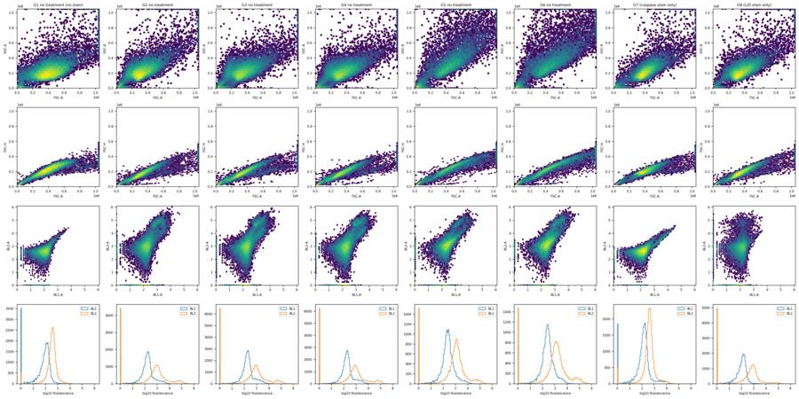
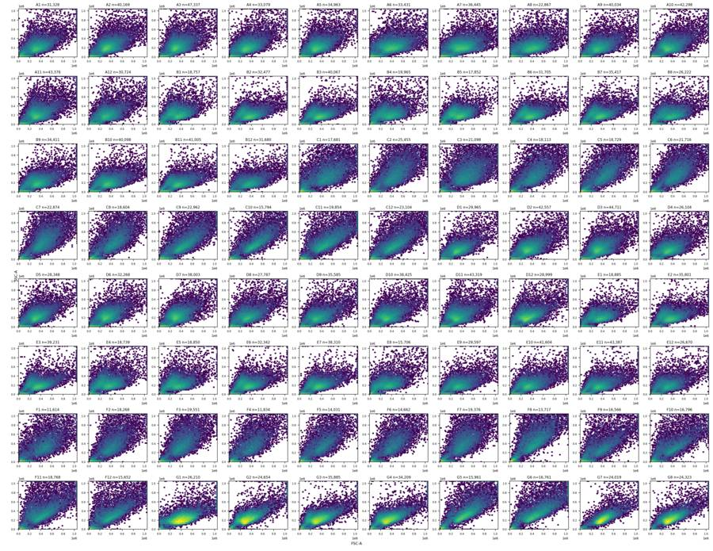
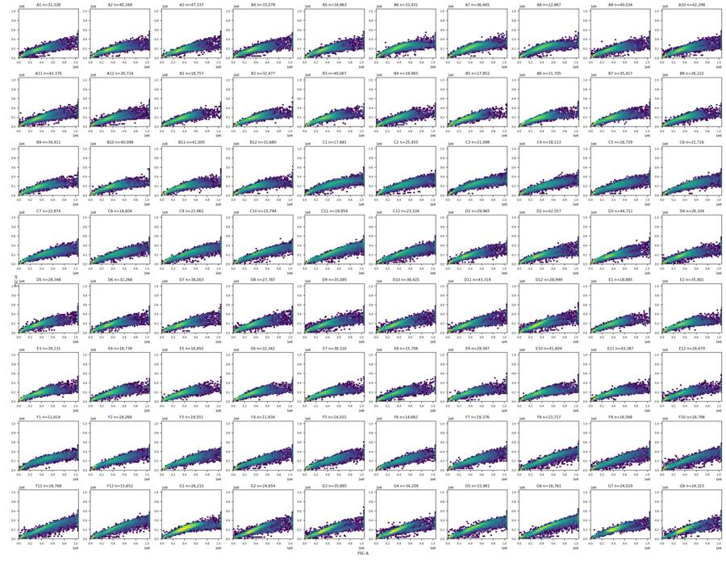
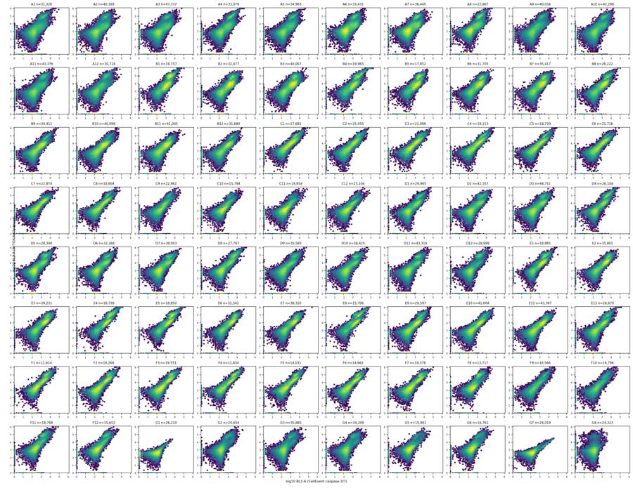
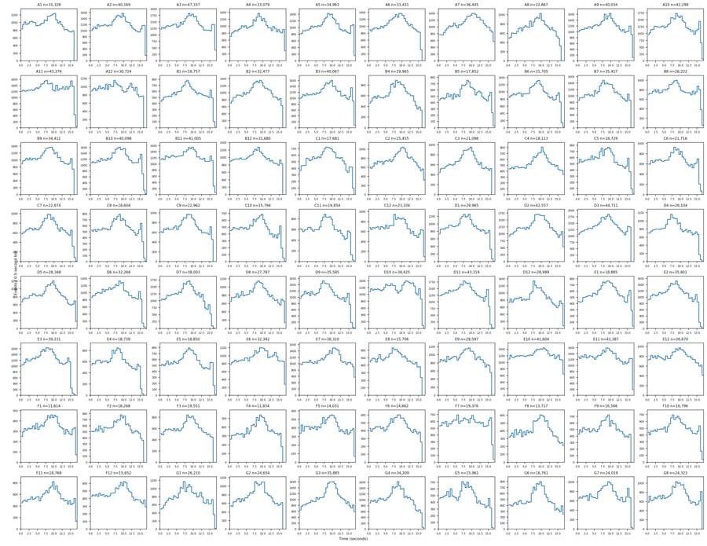
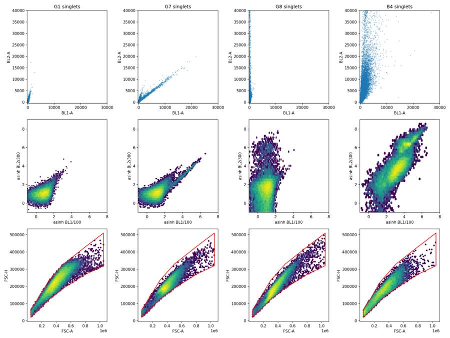
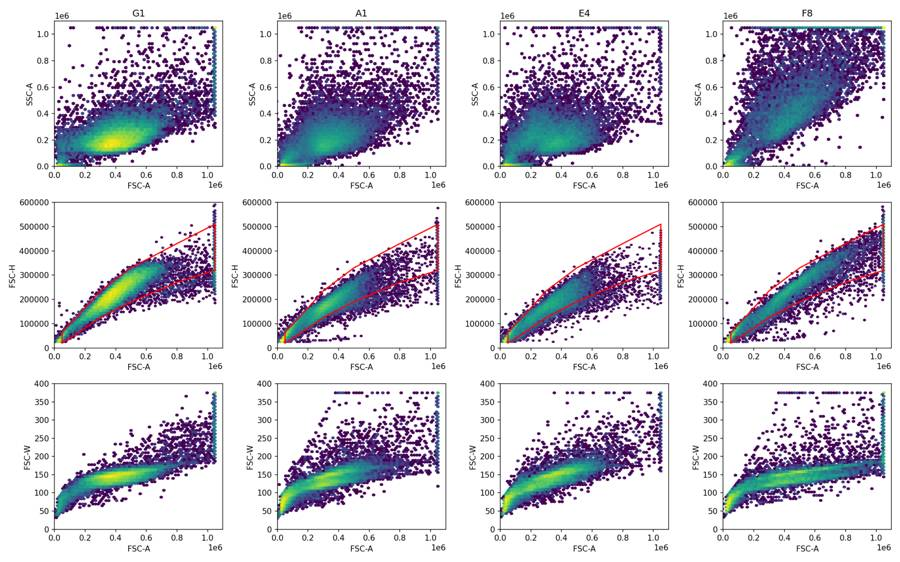
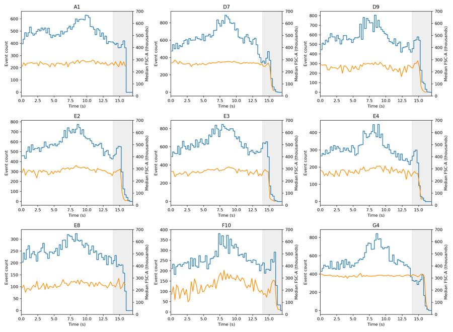
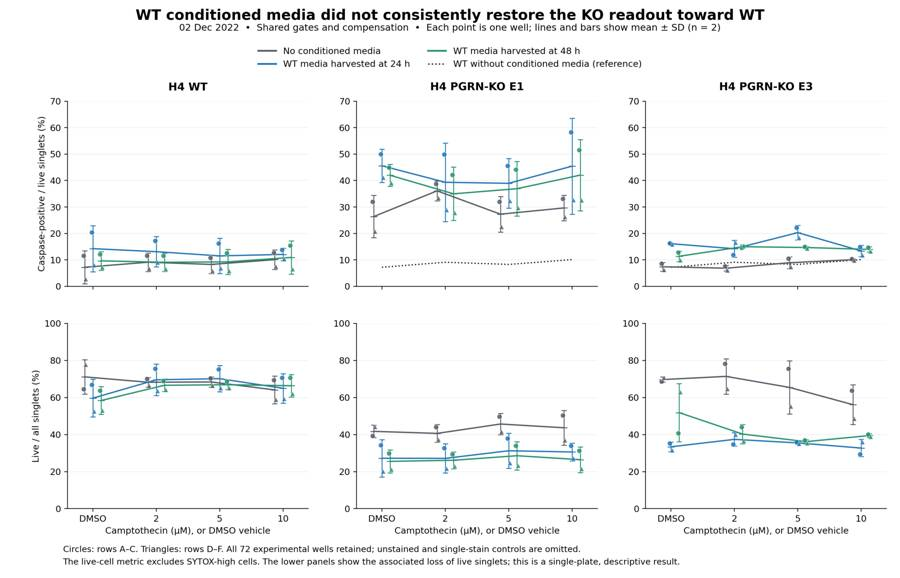
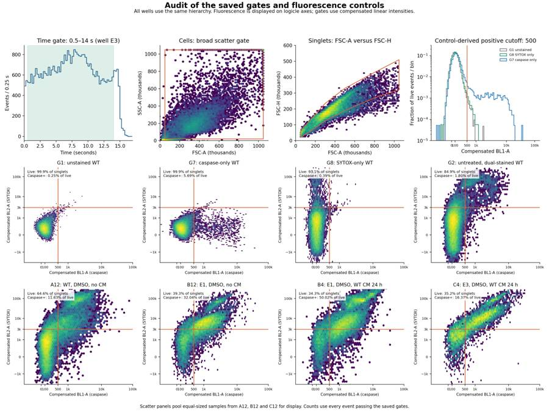

B3_flowkit · GPT-6 Astra · attempt QBAKH6e
Batch fk1 · job fk1_B_EXP22004363_run1_221202_flowkit_gpt-6-astra · trial B_EXP22004363_run1_221202_flowki__QBAKH6e. Long tool outputs are cut at 6,000 characters.
Score
0.29
0.29
Minutes
17.4
17.4
Agent cost
$6.47
$6.47
Steps
34
34
Screenshots / images
10
10
1
task prompt (instruction.md)
<environment_context> <cwd>/task</cwd> <shell>bash</shell> <current_date>2026-11-10</current_date> <timezone>Etc/UTC</timezone> <filesystem><workspace_roots><root>/task</root></workspace_roots><permission_profile type="disabled"><file_system type="unrestricted" /></permission_profile></filesystem> </environment_context>
2
user message
# Caspase-3/7 conditioned-media plate (H4 WT / PGRN-KO): analyse, conclude, recommend
## Goal
You are the analyst for this experiment. Analyse the 80-well plate acquired on 02-Dec-2022, answer the plan's question, and recommend the next step. The plan's question is whether WT progranulin-conditioned media can bring caspase activity in H4 PGRN-KO lines (E1, E3) back toward WT levels.
## Inputs (read-only, `/task/inputs/`)
| Path | Content |
|---|---|
| `/task/inputs/plan.md` | Notebook entry up to flow acquisition: purpose, rationale, materials, protocol, cytometer settings, plate maps and their highlight colours. |
| `/task/inputs/plate_layout.csv` | One row per FCS file: `file, well, sample, cell_line, camptothecin, conditioned_media`. `sample` is the 2022-12-02 plate-map label as written. `conditioned_media` is transcribed from that map's highlight colours (blue = WT 24hr, green = WT 48hr, none = no conditioned media). `camptothecin` is `not stated` where the plate map gives no treatment. |
| `/task/inputs/raw/` | 80 FCS 3.1 files (Attune NxT), `Caspase-assay-2-mlk_caspase_Group_<well>.fcs`, wells A1-F12 and G1-G8. |
## Channels
- FlowKit lists channels by the labels stored inside the FCS files, not by detector ID.
- These labels may be out of date.
- Use the plan's reagent list and cytometer settings to decide what each detector measured.
## Tools and rules
- **Save the gates.** Save the gating strategy as `/task/outputs/gates.xml` (see *Software*). Its gates must be the ones that produced `counts.csv`.
- **Output location.** Write every deliverable to `/task/outputs/`. Do not modify `/task/inputs/`.
- **Time budget.** About 5 hours.
## Deliverables (`/task/outputs/`)
### `gates.xml`
- Your gating strategy as GatingML 2.0, written with `flowkit.export_gatingml` (see *Software*). It must load with `flowkit.parse_gating_xml("/task/outputs/gates.xml")`.
### `counts.csv`
- **Columns, in order:** `file, well, population, role, parent, count, pct_of_parent`.
- **Rows:** one row per file per population, for all 80 files, with the same set of populations for every file.
- **`all_events` row:** one per file, with `population` = `all_events`, `role` = `other`, `parent` = `none` and `pct_of_parent` empty.
- **`role`** must be one of `cells`, `singlets`, `live`, `marker_positive`, `other`. Each of `cells`, `singlets`, `live` and `marker_positive` is used by exactly one population, and that population is the same in every file. `marker_positive` is the assay read-out population. `other` may be used by any number of populations.
- **`parent`** is the name of the parent population; use `all_events` for a top-level gate.
- **`count`** is an integer event count taken from FlowKit statistics on the saved gates.
- **`pct_of_parent`** = 100 x count / parent count.
### `flags.csv`
- **Columns, in order:** `file, well, issue_type, evidence, decision`.
- **Rows:** exactly one row per FCS file (80 rows). If a well has several issues, report the main one and mention the others in `evidence`.
- **`issue_type`** must be one of `none`, `clog`, `ran_dry`, `too_few_events`, `saturation`, `bad_control`, `mislabel`, `other`.
- **`decision`** must be one of `keep`, `keep_with_note`, `exclude`. Rows with `issue_type` = `none` must have `decision` = `keep`.
- **`evidence`** is required whenever `issue_type` is not `none`, and must cite at least one number from the data. It may be empty when `issue_type` = `none`.
### `condition_summary.csv`
- **Columns, in order:** `condition, wells, n_wells_used, mean, sd, metric_definition, normalisation_applied`.
- **`condition`** is a name you choose.
- **`wells`** lists the plate wells used, separated by `;`, e.g. `A1;D1`.
- **`n_wells_used`** is an integer.
- **`mean`** and **`sd`** are computed across the wells used. Leave `sd` empty when n = 1.
- **`metric_definition`** states the per-well metric, including numerator and denominator populations and units.
- **`normalisation_applied`** describes any normalisation, or says `none`.
### `figure.png`
The main result chart.
### `report.md`
Use these headings, in this order: `## Question`, `## Methods`, `## Results`, `## Conclusion`, `## Caveats`, `## Recommendation`.
### `answer.json`
```
{"question": str,
"comparisons": [{"comparison": str, "a": <condition>, "b": <condition>,
"direction": "increase"|"decrease"|"no_clear_change",
"magnitude": str, "confidence": "high"|"medium"|"low"}],
"overall_answer": "yes: ..." | "partial: ..." | "no: ...",
"assay_verdict": "fit_for_purpose"|"needs_optimisation"|"not_fit_for_purpose",
"next_action": <ACTION>,
"next_change": {"what": str, "from": str, "to": str, "why": str},
"excluded_wells": [well, ...],
"caveats": [str, ...]}
```
- **`comparisons`:** at least one. `a` and `b` must be `condition` values that appear in `condition_summary.csv`.
- **`direction`** describes `b` relative to `a`: `increase` means b > a.
- **`magnitude`:** give the size of the difference with a number and its unit.
- **`overall_answer`** must start with `yes:`, `partial:` or `no:`.
- **`next_action`** must be one of `proceed_as_planned`, `repeat_unchanged`, `repeat_with_change`, `optimise_reagent_or_setting`, `change_treatment_or_timing`, `switch_assay`, `stop`.
- `next_change`: the change you recommend, as an object: `what` (the step, reagent or condition to change), `from` (its value as run), `to` (the value you recommend) and `why`. Use empty strings if you recommend no change.
- **`excluded_wells`** must equal the set of wells with `decision` = `exclude` in `flags.csv`.
## Software (FlowKit version of this task)
- **Python 3 with FlowKit 1.2.3** (plus flowio, numpy, pandas, scipy, matplotlib, openpyxl) is installed. There is no graphical analysis program.
- **Load** each file with `flowkit.Sample(path)`. Build **one** `flowkit.GatingStrategy` for all wells, with `flowkit.Dimension` and `flowkit.gates.RectangleGate`, `PolygonGate` or `EllipsoidGate` (no quadrant or Boolean gates).
- **Gate names** must be valid XML IDs: letters, digits and underscores, starting with a letter (no spaces or `+`).
- **One gate per reported population**, named exactly as the population and nested under its parent population (the first population's gate sits at the root). A population's events are its own gate within its parent.
- **Compensation.** Your choice. Every gate dimension must state its `compensation_ref` (`"uncompensated"`, `"FCS"` for the file's own spillover matrix, or the id of a matrix you add to the strategy).
- **Channels.** FlowKit gate dimensions use the detector ID (`$PnN`, e.g. `BL1-A`), not the text label.
- **Transforms.** You may draw gates on transformed axes (for example `flowkit.transforms.LogicleTransform`, added with `add_transform` and referenced by `transformation_ref`).
- **Save** the strategy with `flowkit.export_gatingml(strategy, open("/task/outputs/gates.xml", "wb"))` and check that it reloads with `flowkit.parse_gating_xml`.
- **Counts.** `counts.csv` must be the counts these saved gates give on each file (`strategy.gate_sample(sample)`), with no per-well changes.
- **Looking at data.** Save plots as PNG files and open the image files to view them.
---
## How you work
You work in a **terminal** (bash, working directory `/task`).
- **Inputs** are in `/task/inputs/` (read-only). **Write every deliverable to `/task/outputs/`.** Only that folder is collected for grading.
- **Limits.** There is no limit on the number of actions; the only limit is the time budget above. Save `gates.xml` and your output files early and often.
3
agent
I’ll inspect the plan and detector settings, check acquisition quality across all 80 wells, and build a shared gating strategy. Then I’ll assess whether conditioned media shifts the knockout lines toward WT and save the gates, results, and recommendation.
tool call · exec
text(ALL_TOOLS.filter(x=> /exec_command/.test(x.name)));
text(await tools.exec_command({cmd:"pwd && rg --files -g 'AGENTS.md' -g 'plan.md' -g 'plate_layout.csv' -g '*.py' /task /installed-agent/codex-home 2>/dev/null | head -80","max_output_tokens":4000}));
tool output
Script completed
Wall time 0.1 seconds
Output:
[{"name":"exec_command","description":"Runs a command in a PTY, returning output or a session ID for ongoing interaction.\n\nexec tool declaration:\n```ts\ndeclare const tools: { exec_command(args: {\n // Shell command to execute.\n cmd: string;\n // User-facing approval question for `require_escalated`; omit otherwise.\n justification?: string;\n // True runs the shell with -l/-i semantics; false disables them. Defaults to true.\n login?: boolean;\n // Output token budget. Defaults to 10000 tokens; larger requests may be capped by policy.\n max_output_tokens?: number;\n // Reusable approval prefix for `cmd`, only with `sandbox_permissions: \"require_escalated\"`; for example [\"git\", \"pull\"].\n prefix_rule?: Array<string>;\n // Per-command sandbox override. Defaults to `use_default`; use `require_escalated` for unsandboxed execution.\n sandbox_permissions?: \"use_default\" | \"require_escalated\";\n // Shell binary to launch. Defaults to the user's default shell.\n shell?: string;\n // True allocates a PTY for the command; false or omitted uses plain pipes.\n tty?: boolean;\n // Working directory for the command. Defaults to the turn cwd.\n workdir?: string;\n // Wait before yielding output. Defaults to 10000 ms; effective range is 250-30000 ms.\n yield_time_ms?: number;\n}): Promise<{\n // Chunk identifier included when the response reports one.\n chunk_id?: string;\n // Process exit code when the command finished during this call.\n exit_code?: number;\n // Approximate token count before output truncation.\n original_token_count?: number;\n // Command output text, possibly truncated.\n output: string;\n // Session identifier to pass to write_stdin when the process is still running.\n session_id?: number;\n // Elapsed wall time spent waiting for output in seconds.\n wall_time_seconds: number;\n}>; };\n```"}]
{"chunk_id":"40ce7a","wall_time_seconds":0.0000033,"exit_code":0,"original_token_count":15,"output":"/task\n/task/inputs/plate_layout.csv\n/task/inputs/plan.md\n"}tool call · exec
const r = await Promise.allSettled([
tools.exec_command({cmd:"cat /task/inputs/plan.md","max_output_tokens":16000}),
tools.exec_command({cmd:"cat /task/inputs/plate_layout.csv","max_output_tokens":12000}),
tools.exec_command({cmd:"ls -la /task && python - <<'PY'\nimport flowkit as fk, inspect\nfrom importlib.metadata import version\nprint('FlowKit', version('flowkit'))\nfor ob in [fk.Sample,fk.GatingStrategy,fk.Dimension,fk.gates.RectangleGate,fk.gates.PolygonGate, fk.transforms.LogicleTransform]:\n print(ob.__name__, inspect.signature(ob))\nPY","max_output_tokens":5000})
]);r.forEach((x,i)=>text({i,...x}));
tool output
Script completed
Wall time 1.4 seconds
Output:
{"i":0,"status":"fulfilled","value":{"chunk_id":"e24ed7","wall_time_seconds":0.00000327,"exit_code":0,"original_token_count":1637,"output":"# EXP22004363 | 2022.11.28 Caspase Activity Assay Dev: Progranulin Conditioned Media\n\nThis is the notebook entry text up to flow acquisition on 2022-12-02. People's names have been removed.\n\n- **Tags:** Target PGRN; Technology Assay development; Model System Cell based; Methodology Flow; Cell Type H4.\n- **Plate maps:** shown below as grids (rows A-H, columns 1-12). Empty cells are blank.\n- **Highlight colours:** the notebook encodes conditioned-media treatment by highlight colour. The colours are listed at the end.\n\n## DAY 2022-11-28\n\n### Purpose\nTo determine if progranulin conditioned media can restore wild-type levels of caspase activity in H4 GRN KO cells.\n\n### Rationale\nPrevious literature evidence suggests that applying exogenous progranulin to cells can restore molecular phenotypes in progranulin deficient lines. Our previous experiment with caspase activity on H4 GRN WT and KO cells showed that GRN KO lines had increased caspase activity. This difference was enhanced after campothesin challenge in both GRN WT and KO cells ( ). In this experiment, we will determine if applying conditioned media from WT cell lines onto KO lines can reduce caspase activity closer to WT levels.\n\n### Materials\n- H4 WT cells\n- H4 PGRN KO E1\n- H4 PGRN KO E3\n- H4 media (DMEM + 10% FBS)\n- CellEvent Caspase-3/7 Green Flow Cytometry Assay Kit\n- Camptothecin\n- Plate 10k cells according to plate:\n\n| | 1 | 2 | 3 | 4 | 5 | 6 | 7 | 8 | 9 | 10 | 11 | 12 |\n|---|---|---|---|---|---|---|---|---|---|---|---|---|\n| A | WT | WT | WT | WT | WT | WT | WT | WT | WT | | | |\n| B | WT | WT | WT | WT | WT | WT | WT | WT | WT | | | |\n| C | WT | WT | WT | WT | WT | WT | WT | WT | WT | | | |\n| D | WT | WT | WT | WT | WT | WT | WT | WT | WT | | | |\n| E | E1 | E1 | E1 | E1 | E1 | E1 | E1 | E1 | E1 | | | |\n| F | E3 | E3 | E3 | E3 | E3 | E3 | E3 | E3 | E3 | | | |\n| G | | | | | | | | | Serum free media | | | |\n| H | 24 hr | | | | 48 hr | | | | | | | |\n\n- WT-330K for 33 wells-resuspend in 3300mL\n- E1 and E3-90K for 9 wells-resuspend in 900uL\n\n## DAY 2022-11-29\n- Harvest media after 24 and 48 hrs and place in 4 C until ready to use.\n\n## DAY 2022-11-30\n- Plate cells according to the following plate map and incubate at 37C:\n\n| | 1 | 2 | 3 | 4 | 5 | 6 | 7 | 8 | 9 | 10 | 11 | 12 |\n|---|---|---|---|---|---|---|---|---|---|---|---|---|\n| A | WT | WT | WT | WT | WT | WT | WT | WT | WT | WT | WT | WT |\n| B | E1 | E1 | E1 | E1 | E1 | E1 | E1 | E1 | E1 | E1 | E1 | E1 |\n| C | E3 | E3 | E3 | E3 | E3 | E3 | E3 | E3 | E3 | E3 | E3 | E3 |\n| D | WT | WT | WT | WT | WT | WT | WT | WT | WT | WT | WT | WT |\n| E | E1 | E1 | E1 | E1 | E1 | E1 | E1 | E1 | E1 | E1 | E1 | E1 |\n| F | E3 | E3 | E3 | E3 | E3 | E3 | E3 | E3 | E3 | E3 | E3 | E3 |\n| G | WT no treatment | WT no treatment | E3 no treatment | E3 no treatment | | | | | | | | |\n| H | E1 no treatment | E1 no treatment | WT (flow control) | WT (flow control) | | | | | | | | |\n\n## DAY 2022-12-01\n- Gently wash cells with DMEM.\n- Replace media with conditioned media collected previously. Conditioned media added at 9AM\n\n## DAY 2022-12-02\n- After 24 hours, add campthothesin according to the plate map:\n\n| | 1 | 2 | 3 | 4 | 5 | 6 | 7 | 8 | 9 | 10 | 11 | 12 |\n|---|---|---|---|---|---|---|---|---|---|---|---|---|\n| A | WT 10uM | WT 5uM | WT 2uM | WT DMSO | WT 10uM | WT 5uM | WT 2uM | WT DMSO | WT 10uM | WT 5uM | WT 2uM | WT DMSO |\n| B | E1 10uM | E1 5uM | E1 2uM | E1 DMSO | E1 10uM | E1 5uM | E1 2uM | E1 DMSO | E1 10uM | E1 5uM | E1 2uM | E1 DMSO |\n| C | E3 10uM | E3 5uM | E3 2uM | E3 DMSO | E3 10uM | E3 5uM | E3 2uM | E3 DMSO | E3 10uM | E3 5uM | E3 2uM | E3 DMSO |\n| D | WT 10uM | WT 5uM | WT 2uM | WT DMSO | WT 10uM | WT 5uM | WT 2uM | WT DMSO | WT 10uM | WT 5uM | WT 2uM | WT DMSO |\n| E | E1 10uM | E1 5uM | E1 2uM | E1 DMSO | E1 10uM | E1 5uM | E1 2uM | E1 DMSO | E1 10uM | E1 5uM | E1 2uM | E1 DMSO |\n| F | E3 10uM | E3 5uM | E3 2uM | E3 DMSO | E3 10uM | E3 5uM | E3 2uM | E3 DMSO | E3 10uM | E3 5uM | E3 2uM | E3 DMSO |\n| G | WT no treatment (no stain) | WT no treatment | E3 no treatment | E3 no treatment | E1 no treatment | E1 no treatment | WT (caspase stain only) | WT (L/D stain only) | | | | |\n| H | | | | | | | | | | | | |\n\n- Blue highlight=treated with WT 24hr conditoned media\n- Green highlight= treated with WT 48hr conditioned media\n- No highlight= no conditioned media treatment\n- Incubate and run flow.\n- Aspirate media and wash with PBS\n- Add 150uL trypsin incubate for 5min\n- Add 75uL FBS and collect into 96w round bottom plate\n- spin down 200xg for 5min\n- Add 200uL of Cell Event Caspase 3/7 Detection reagent (1:1000) in flow staining buffer. Incubate for 30min at 37C\n- Prepare SYTOX AAdvanced Dead Cell Stain at 100uM concentration by adding 1000uL DMSO to stain. Mix well\n- During the final 5 minutes of 30min Caspase incubation add 2uL of the 100uM Dead Cell stain (final concentration of 1uM)\n- Analyze the samples without fixing.\n\nFlow cytometer settings: FSC-20; SSC-290; BL1 (caspase)-225, BL2 (AAddvanced Dead Cell Stain)-350\n\n## Plate-map cell colours (from the notebook's highlighting; the plain-text maps above drop colour)\n\n### Plate map of 2022-11-28\n- row A: WT [light cyan #C2EDF8] x8 (cols 1-8) | WT (col 9, no highlight) | - | - | -\n- row B: WT [light cyan #C2EDF8] x8 (cols 1-8) | WT (col 9, no highlight) | - | - | -\n- row C: WT [light cyan #C2EDF8] x8 (cols 1-8) | WT (col 9, no highlight) | - | - | -\n- row D: WT [light green #E8F9CF] x8 (cols 1-8) | WT (col 9, no highlight) | - | - | -\n- row E: E1 [light green #E8F9CF] x8 (cols 1-8) | E1 (col 9, no highlight) | - | - | -\n- row F: E3 [light green #E8F9CF] x8 (cols 1-8) | E3 (col 9, no highlight) | - | - | -\n- row G: cols 1-8 empty | Serum free media (col 9) | - | - | -\n-
… [8,913 more characters not shown]tool call · exec
text(await tools.exec_command({cmd:"python - <<'PY'\nimport flowkit as fk, inspect\nfrom pathlib import Path\ns=fk.Sample('/task/inputs/raw/Caspase-assay-2-mlk_caspase_Group_A1.fcs')\nprint('channel table\\n',s.channels.to_string(index=False))\nprint('pnn',s.pnn_labels,'pns',s.pns_labels)\nprint('shape',s.get_events(source='raw').shape)\nprint('metadata',s.metadata)\nfor ob in [fk.GatingStrategy.gate_sample, fk.GatingStrategy.add_gate, fk.GatingStrategy.add_transform, fk.Sample.get_channel_index, fk.Sample.get_events]: print(inspect.signature(ob))\nprint('count files',len(list(Path('/task/inputs/raw').glob('*.fcs'))))\nPY","max_output_tokens":8000}));
tool output
Script completed
Wall time 0.7 seconds
Output:
{"chunk_id":"ee9e6e","wall_time_seconds":0.570109168,"exit_code":0,"original_token_count":1281,"output":"channel table\n channel_number pnn pns png pne pnr\n 1 Time Time 1.0 (0.0, 0.0) 67108864.0\n 2 FSC-A FSC-A 1.0 (0.0, 0.0) 1048576.0\n 3 SSC-A SSC-A 1.0 (0.0, 0.0) 1048576.0\n 4 BL1-A AAV-GFP-GFP-A 1.0 (0.0, 0.0) 1048576.0\n 5 BL2-A AAdvanced livedead-A 1.0 (0.0, 0.0) 1048576.0\n 6 FSC-H FSC-H 1.0 (0.0, 0.0) 1048576.0\n 7 SSC-H SSC-H 1.0 (0.0, 0.0) 1048576.0\n 8 BL1-H AAV-GFP-GFP-H 1.0 (0.0, 0.0) 1048576.0\n 9 BL2-H AAdvanced livedead-H 1.0 (0.0, 0.0) 1048576.0\n 10 FSC-W FSC-W 1.0 (0.0, 0.0) 1024.0\n 11 SSC-W SSC-W 1.0 (0.0, 0.0) 1024.0\n 12 BL1-W AAV-GFP-GFP-W 1.0 (0.0, 0.0) 1024.0\n 13 BL2-W AAdvanced livedead-W 1.0 (0.0, 0.0) 1024.0\npnn ['Time', 'FSC-A', 'SSC-A', 'BL1-A', 'BL2-A', 'FSC-H', 'SSC-H', 'BL1-H', 'BL2-H', 'FSC-W', 'SSC-W', 'BL1-W', 'BL2-W'] pns ['Time', 'FSC-A', 'SSC-A', 'AAV-GFP-GFP-A', 'AAdvanced livedead-A', 'FSC-H', 'SSC-H', 'AAV-GFP-GFP-H', 'AAdvanced livedead-H', 'FSC-W', 'SSC-W', 'AAV-GFP-GFP-W', 'AAdvanced livedead-W']\nshape (31328, 13)\nmetadata {'par': '13', 'tot': '31328', 'mode': 'L', 'datatype': 'F', 'byteord': '1,2,3,4', 'p1f': 'NA', 'p1l': 'NA', 'p1s': 'Time', 'p1v': 'NA', 'p1n': 'Time', 'p1b': '32', 'p1r': '67108864', 'p1e': '0,0', 'p2f': 'NA', 'p2l': '488', 'p2s': 'FSC-A', 'p2v': '20', 'p2n': 'FSC-A', 'p2b': '32', 'p2r': '1048576', 'p2e': '0,0', 'p3f': 'NA', 'p3l': '488', 'p3s': 'SSC-A', 'p3v': '290', 'p3n': 'SSC-A', 'p3b': '32', 'p3r': '1048576', 'p3e': '0,0', 'p4f': 'NA', 'p4l': '488', 'p4s': 'AAV-GFP-GFP-A', 'p4v': '225', 'p4n': 'BL1-A', 'p4b': '32', 'p4r': '1048576', 'p4e': '0,0', 'p5f': 'NA', 'p5l': '488', 'p5s': 'AAdvanced livedead-A', 'p5v': '350', 'p5n': 'BL2-A', 'p5b': '32', 'p5r': '1048576', 'p5e': '0,0', 'p6f': 'NA', 'p6l': '488', 'p6s': 'FSC-H', 'p6v': '20', 'p6n': 'FSC-H', 'p6b': '32', 'p6r': '1048576', 'p6e': '0,0', 'p7f': 'NA', 'p7l': '488', 'p7s': 'SSC-H', 'p7v': '290', 'p7n': 'SSC-H', 'p7b': '32', 'p7r': '1048576', 'p7e': '0,0', 'p8f': 'NA', 'p8l': '488', 'p8s': 'AAV-GFP-GFP-H', 'p8v': '225', 'p8n': 'BL1-H', 'p8b': '32', 'p8r': '1048576', 'p8e': '0,0', 'p9f': 'NA', 'p9l': '488', 'p9s': 'AAdvanced livedead-H', 'p9v': '350', 'p9n': 'BL2-H', 'p9b': '32', 'p9r': '1048576', 'p9e': '0,0', 'p10f': 'NA', 'p10l': '488', 'p10s': 'FSC-W', 'p10v': '20', 'p10n': 'FSC-W', 'p10b': '32', 'p10r': '1024', 'p10e': '0,0', 'p11f': 'NA', 'p11l': '488', 'p11s': 'SSC-W', 'p11v': '290', 'p11n': 'SSC-W', 'p11b': '32', 'p11r': '1024', 'p11e': '0,0', 'p12f': 'NA', 'p12l': '488', 'p12s': 'AAV-GFP-GFP-W', 'p12v': '225', 'p12n': 'BL1-W', 'p12b': '32', 'p12r': '1024', 'p12e': '0,0', 'p13f': 'NA', 'p13l': '488', 'p13s': 'AAdvanced livedead-W', 'p13v': '350', 'p13n': 'BL2-W', 'p13b': '32', 'p13r': '1024', 'p13e': '0,0', 'cyt': '0A29009 Attune NxT Acoustic Focusing Cytometer (Lasers: BRV6Y)', 'sys': 'SEA11065ATTUNE Microsoft Windows 10 Enterprise LTSC', 'spillover': '6,BL1-A,BL2-A,BL1-H,BL2-H,BL1-W,BL2-W,1.000000,0.000000,0.000000,0.000000,0.000000,0.000000,0.000000,1.000000,0.000000,0.000000,0.000000,0.000000,0.000000,0.000000,1.000000,0.000000,0.000000,0.000000,0.000000,0.000000,0.000000,1.000000,0.000000,0.000000,0.000000,0.000000,0.000000,0.000000,1.000000,0.000000,0.000000,0.000000,0.000000,0.000000,0.000000,1.000000', 'btim': '14:33:37', 'cells': 'NA', 'com': 'NA', 'cytsn': '2AFC228071019', 'date': '02-Dec-2022', 'etim': '14:33:54', 'exp': 'NA', 'fil': 'A1.fcs', 'inst': 'NA', 'originality': 'Original', 'lost': '0', 'op': 'Jeff Huang', 'plateid': 'NA', 'platename': 'Caspase-assay-2-mlk', 'proj': 'caspase', 'smno': 'Group', 'src': 'NA', 'timestep': '0.001', 'vol': '133000', 'wellid': 'A1', '#coincidentcount': '756', '#flowrate': '500', '#laser1asf': '1.05', '#laser1color': 'Blue', '#laser1delay': '1100', '#laser2asf': '1.09', '#laser2color': 'Red', '#laser2delay': '1514', '#laser3asf': '1.02', '#laser3color': 'Violet', '#laser3delay': '702', '#laser4asf': '0.98', '#laser4color': 'Yellow', '#laser4delay': '275', '#laserconfig': 'BRV6Y', '#p12label': 'GFP', '#p12target': 'AAV-GFP', '#p13target': 'AAdvanced livedead', '#p1label': 'NA', '#p1target': 'NA', '#p4label': 'GFP', '#p4target': 'AAV-GFP', '#p5target': 'AAdvanced livedead', '#p8label': 'GFP', '#p8target': 'AAV-GFP', '#p9target': 'AAdvanced livedead', '#ptdate': '02-Dec-2022', '#ptresult': 'Pass', '#tr1': 'OR_FSC,25000', '#widththreshold': '1000', '#winext': '0', 'hostid': 'SEA11065ATTUNE', 'begindata': '000000008192', 'enddata': '000001637247', 'nextdata': '000000000000', 'beginstext': '000000000000', 'endstext': '000000000000', 'beginanalysis': '000000000000', 'endanalysis': '000000000000'}\n(self, sample, cache_events=False, verbose=False)\n(self, gate, gate_path, sample_id=None)\n(self, transform_id, transform)\n(self, channel_label_or_number)\n(self, source='xform', subsample=False, event_mask=None)\ncount files 80\n"}tool call · exec
text(await tools.exec_command({cmd:"cat > /task/outputs/explore.py <<'PY'\nfrom pathlib import Path\nimport flowkit as fk\nimport pandas as pd\nimport numpy as np\nimport matplotlib\nmatplotlib.use('Agg')\nimport matplotlib.pyplot as plt\nO=Path('/task/outputs'); L=pd.read_csv('/task/inputs/plate_layout.csv')\nS={r.well:fk.Sample('/task/inputs/raw/'+r.file) for r in L.itertuples()}\nrows=[]\nfor w,s in S.items():\n e=s.get_events(source='raw'); d={'well':w, 'events':s.event_count,'tmin':e[:,0].min(),'tmax':e[:,0].max(),'btim':s.metadata['btim'],'etim':s.metadata['etim'],'vol':s.metadata['vol'],'coincident':s.metadata.get('#coincidentcount'), 'lost':s.metadata.get('lost')}\n for i,c in enumerate(s.pnn_labels):\n for q in [0,.01,.1,.5,.9,.99,1]:d[c+'_q'+str(q)]=np.quantile(e[:,i],q)\n d[c+'_sat_pct']=100*np.mean(e[:,i]>=float(s.metadata[f'p{i+1}r'])-1)\n rows.append(d)\npd.DataFrame(rows).to_csv(O/'raw_qc_metrics.csv',index=False)\nplt.rcParams.update({'font.size':7})\nfor typ in ['scatter','singlets','fluorescence','time']:\n fig,axs=plt.subplots(8,10,figsize=(22,17))\n for ax,(w,s) in zip(axs.flat,S.items()):\n e=s.get_events(source='raw')\n if typ=='scatter':\n ax.hexbin(e[:,1],e[:,2],gridsize=48,bins='log',mincnt=1,extent=(0,1.05e6,0,1.05e6),cmap='viridis');ax.set_xlim(0,1.05e6);ax.set_ylim(0,1.05e6)\n elif typ=='singlets':\n ax.hexbin(e[:,1],e[:,5],gridsize=48,bins='log',mincnt=1,extent=(0,1.05e6,0,1.05e6),cmap='viridis');ax.set_xlim(0,1.05e6);ax.set_ylim(0,1.05e6)\n elif typ=='fluorescence':\n ax.hexbin(np.log10(np.maximum(e[:,3],1)),np.log10(np.maximum(e[:,4],1)),gridsize=48,bins='log',mincnt=1,extent=(0,6.1,0,6.1),cmap='viridis');ax.set_xlim(0,6.1);ax.set_ylim(0,6.1)\n else:\n bins=np.linspace(0,17,35);n,_=np.histogram(e[:,0],bins);ax.step((bins[:-1]+bins[1:])/2,n,where='mid');ax.set_xlim(0,17);ax.set_ylim(0,max(n.max()*1.1,10))\n ax.set_title(w+f' n={len(e):,}',fontsize=8);ax.tick_params(labelsize=6)\n fig.supxlabel({'scatter':'FSC-A','singlets':'FSC-A','fluorescence':'log10 BL1-A (CellEvent caspase-3/7)','time':'Time (seconds)'}[typ]); fig.supylabel({'scatter':'SSC-A','singlets':'FSC-H','fluorescence':'log10 BL2-A (SYTOX AADvanced)','time':'Events / 0.5-second bin'}[typ]);fig.tight_layout();fig.savefig(O/(typ+'_all.png'),dpi=140);plt.close(fig)\n# High resolution controls with percentile labels\nfig,axs=plt.subplots(4,8,figsize=(24,12))\nfor k in range(8):\n w='G'+str(k+1);e=S[w].get_events(source='raw')\n for j,(x,y,xl,yl) in enumerate([(1,2,'FSC-A','SSC-A'),(1,5,'FSC-A','FSC-H'),(3,4,'BL1-A','BL2-A')]):\n ax=axs[j,k]\n if j<2:ax.hexbin(e[:,x],e[:,y],gridsize=60,bins='log',mincnt=1);ax.set_xlim(0,1.05e6);ax.set_ylim(0,1.05e6)\n else:ax.hexbin(np.log10(np.maximum(e[:,x],1)),np.log10(np.maximum(e[:,y],1)),gridsize=60,bins='log',mincnt=1);ax.set_xlim(0,6.1);ax.set_ylim(0,6.1)\n ax.set_xlabel(xl);ax.set_ylabel(yl)\n if j==0:ax.set_title(w+' '+L[L.well==w]['sample'].iloc[0].replace('WT ','').replace('E1 ','').replace('E3 ',''),fontsize=8)\n axs[3,k].hist(np.log10(np.maximum(e[:,3],1)),bins=np.linspace(0,6.1,100),histtype='step',label='BL1');axs[3,k].hist(np.log10(np.maximum(e[:,4],1)),bins=np.linspace(0,6.1,100),histtype='step',label='BL2');axs[3,k].legend();axs[3,k].set_xlabel('log10 fluorescence')\nfig.tight_layout();fig.savefig(O/'controls_raw.png',dpi=160);plt.close(fig)\nprint(pd.DataFrame(rows)[['well','events','tmin','tmax','FSC-A_q0.5','SSC-A_q0.5','BL1-A_q0.5','BL2-A_q0.5','BL1-A_sat_pct','BL2-A_sat_pct']].to_string(index=False))\nPY\npython /task/outputs/explore.py","yield_time_ms":1000,"max_output_tokens":5000}));
tool output
Script completed
Wall time 1.2 seconds
Output:
{"chunk_id":"fde7ec","wall_time_seconds":1.001610606,"session_id":3446,"original_token_count":0,"output":""}tool call · exec
text(await tools.web__run({search_query:[{q:'site.thermofisher.com CellEvent Caspase 3/7 Green Flow Cytometry Assay Kit SYTOX AADvanced 488 530 585 compensation protocol'}],response_length:"long"}));
tool output
Script completed Wall time 0.7 seconds Output: USER GUIDE CellEvent™ Caspase-3/7 Green Flow Cytom (https://www.thermofisher.com/TFS-Assets/LSG/manuals/cellevent_caspase_3_7_grn_flow_cytometry_assay_kit_man.pdf) citeturn0search12 [wordlim: 200] Published: 8 months ago; fluorescence emission using a 530/30 bandpass filter or equivalent for CellEvent ... Green Detection Reagent and a 690/50 bandpass filter or equivalent for SYTOX ... Product CellEvent™ Caspase-3/7 Green Flow Cytometry Assay Kit | Cat. ... Product CellEvent™ Caspase-3/7 Green Flow Cytometry Assay Kit | Cat. 1.1. (Optional) Induce apoptosis in cells using the desired method. Prepare a negative control by incubating cells in the absence of apoptosis inducing agent. 1 Stain cells with CellEvent™ Caspase-3/7 Green Flow Cytometry Assay Kit (continued) 1.2. Harvest the cell sample(s). Adjust the cell concentration of the sample(s) between 1 × 105 cells/mL and 1 × 107 cells/mL using the appropriate buffer such as 1X PBS (Cat. No. 10010) ± 2% BSA, or complete growth medium (e.g., RPMI, Cat. No. 22400; DMEM, Cat. No. 11995). 1.3. Before using the SYTOX ™ AADvanced ™ Dead Cell Stain for the first time, prepare a 1 mM solution. a. Remove the vial containing the SYTOX ™ AADvanced ™ Dead Cell Stain (Component B) and the vial of DMSO (Component C) from the freezer and allow the contents to equilibrate to room temperature. b. Add 100 µL of DMSO to the vial of SYTOX ™ AADvanced ™ Dead Cell Stain and mix well. 1.4. Prepare flow cytometry tubes each containing 1 mL of cell suspension. We recommend that you prepare and acquire single stained compensation controls using the CellEvent ™ Caspase-3/7 Green Detection Reagent and the SYTOX ™ AADvanced ™ Dead Cell Stain. 1.5. Add 1 µL of CellEvent ™ Caspase-3/7 Green Detection Reagent to 1 mL of sample and mix gently. Incubate the samples for 30 minutes at 37°C or 45–60 minutes at room temperature, protected from light. The final concentration of the reagent is 500 nM. Note: For other cell types and models, stain concentration and labeling duration may require adjustment. For optimization, we recommend testing final concentrations between 400– 1,000 nM. 1.6. During the final 5 minutes of staining, add 1 µL of the 1 mM SYTOX ™ AADvanced ™ Dead Cell Stain in DMSO to the appropriate samples and mix gently. The final labeling concentration of stain is 1 µM. 1.7. Analyze the samples without washing or fixing, using 488‑nm excitation and collecting fluorescence emission using a 530/30 bandpass filter or equivalent for CellEvent ™ Caspase-3/7 Green Detection Reagent and a 690/50 bandpass filter or equivalent for SYTOX ™ AADvanced ™ Dead Cell Stain. Note: Alternative laser light sources (e.g., 532 nm and 561 nm) are also compatible with the SYTOX ™ AADvanced ™ Dead Cell Stain. 1.8. Following application of standard fluorescence compensation technique, 3 cell populations should be visible on a dual parameter dot plot of CellEvent ™ Caspase-3/7 Green Detection Reagent fluorescence versus SYTOX ™ AADvanced ™ Dead Cell Stain fluorescence (see Figure 1). 2 Perform multicolor staining CellEvent ™ Caspase-3/7 Green Detection Reagent and the SYTOX ™ AADvanced ™ Dead Cell Stain have minimal spectral overlap with fluorophores excited by other laser lines, and they can be combined with other dyes excitable by the 488‑nm laser or other lasers. If used in combination with other reagents for multicolor applications, apply the other dyes to the sample first following manufacturer’s instructions, and then apply the SYTOX ™ AADvanced ™ Dead Cell Stain as the last stain to the sample. Do not wash or fix samples prior to flow cytometric analysis. Related products Product CellEvent™ Caspase-3/7 Green Flow Cytometry Assay Kit | Cat. No. C10427 | Unit size 100 assays --- | --- | --- Product CellEvent™ Caspase-3/7 Green Flow Cytometry Assay Kit | Cat. No. C10740 | Unit size 20 assays Product CellEvent™ Caspase-3/7 Green Detection Reagent | Cat. No. C10423 | Unit size 100 µL Product CellEvent™ Caspase-3/7 Green Detection Reagent | Cat. No. C10723 | Unit size 20 µL CellEvent ™ Caspase-3/7 Green Flow Cytometry Assay Kit User Guide 3-------------------------------------------------------------------------------- USER GUIDE CellEvent™ Caspase-3/7 Green Flow Cytom (https://tools.thermofisher.com/content/sfs/manuals/cellevent_caspase_3_7_grn_flow_cytometry_assay_kit_man.pdf) citeturn0search13 [wordlim: 200] Published: 10.4 years ago; fluorescence emission using a 530/30 bandpass filter or equivalent for CellEvent™ ... CellEvent™ Caspase 3/7 Detection Reagent and the SYTOX™ AADvanced™ dead cell ... CellEvent™ Caspase-3/7 Green Flow Cytometry Assay Kit | 4 1.3 Before using the SYTOX™ AADvanced™ dead cell stain for the first time, prepare a 1 mM solution. a. Remove the vial containing the SYTOX™ AADvanced™ dead cell stain (Component B) and the vial of DMSO (Component C) from the freezer and allow the contents to equilibrate to room temperature. b. Add 100 μL of DMSO to the vial of SYTOX™ AADvanced™ dead cell stain and mix well. 1.4 Prepare flow cytometry tubes each containing 1 mL of cell suspension. We recommend that you prepare and acquire single stained compensation controls using the CellEvent™ Caspase-3/7 Green Detection Reagent and the SYTOX™ AADvanced™ dead cell stain. 1.5 Add 1 µL of CellEvent™ Caspase-3/7 Green Detection Reagent to 1 mL of sample and mix gently. Incubate the samples for 30 minutes at 37°C or 45–60 minutes at room temperature, protected from light. The final concentration of the reagent is 500 nM. Note: For other cell types and models, stain concentration and labeling duration may require adjustment. For optimization, we recommend testing final concentrations between 400–1000 nM. 1.6 During the final 5 minutes of staining, add 1 μL of the 1 mM SYTOX™ AADvanced™ dead cell stain solution in DMSO to the appropriate samples and mix gently. The final labeling concentration of stain is … [23,218 more characters not shown]
tool call · exec
text(await tools.write_stdin({session_id:3446,chars:"","yield_time_ms":1000,"max_output_tokens":6500}));
tool output
Script completed
Wall time 5.0 seconds
Output:
{"chunk_id":"3ab3c4","wall_time_seconds":5.001711071,"session_id":3446,"original_token_count":0,"output":""}9
agent
The acquisition map assigns 24-hour and 48-hour WT conditioned media by column, with duplicate wells in paired rows. I’m using that final map because it differs from the earlier preparation map. The detector labels are stale: the notebook identifies BL1 as caspase-3/7 and BL2 as the dead-cell stain.
tool call · exec
const r=await tools.exec_command({cmd:"ls -lh /task/outputs && python - <<'PY'\nimport pandas as pd\np=pd.read_csv('/task/outputs/raw_qc_metrics.csv')\nprint(p[['well','events','tmin','tmax','FSC-A_q0.5','SSC-A_q0.5','BL1-A_q0.5','BL2-A_q0.5','BL1-A_sat_pct','BL2-A_sat_pct']].to_string(index=False))\nPY","max_output_tokens":6500});text(r);
tool output
Script completed
Wall time 0.2 seconds
Output:
{"chunk_id":"1cb026","wall_time_seconds":0.062098592,"exit_code":0,"original_token_count":2209,"output":"total 11M\n-rw-r--r-- 1 root root 1.8M Nov 10 17:09 controls_raw.png\n-rw-r--r-- 1 root root 3.4K Nov 10 17:09 explore.py\n-rw-r--r-- 1 root root 2.7M Nov 10 17:09 fluorescence_all.png\n-rw-r--r-- 1 root root 75K Nov 10 17:09 raw_qc_metrics.csv\n-rw-r--r-- 1 root root 4.4M Nov 10 17:09 scatter_all.png\n-rw-r--r-- 1 root root 1.7M Nov 10 17:09 singlets_all.png\n-rw-r--r-- 1 root root 460K Nov 10 17:09 time_all.png\nwell events tmin tmax FSC-A_q0.5 SSC-A_q0.5 BL1-A_q0.5 BL2-A_q0.5 BL1-A_sat_pct BL2-A_sat_pct\n A1 31328 0.014 15.980 273564.0 153024.5 174.0 874.0 0.0 0.012768\n A2 40169 0.015 16.706 297602.0 170869.0 185.0 833.0 0.0 0.000000\n A3 47337 0.015 16.851 267990.0 160489.0 185.0 767.0 0.0 0.000000\n A4 33079 0.014 16.632 282823.0 162713.0 225.0 1066.0 0.0 0.018138\n A5 34963 0.015 16.749 274442.0 167605.0 194.0 897.0 0.0 0.002860\n A6 33431 0.014 15.660 350928.0 184863.0 206.0 1392.0 0.0 0.005982\n A7 36445 0.015 16.841 341038.0 182660.0 208.0 1311.0 0.0 0.000000\n A8 22867 0.015 15.832 353126.0 182327.0 221.0 1593.0 0.0 0.048104\n A9 40034 0.014 16.671 250810.0 134329.0 174.0 751.0 0.0 0.009992\n A10 42298 0.014 16.647 276477.5 160995.5 178.0 771.0 0.0 0.000000\n A11 43376 0.014 16.621 273871.5 154000.5 183.0 741.0 0.0 0.000000\n A12 30724 0.014 15.960 253281.5 139325.0 189.0 899.0 0.0 0.016274\n B1 18757 0.014 16.702 285646.0 186835.0 1102.0 5301.0 0.0 0.037319\n B2 32477 0.014 15.827 301651.0 158869.0 928.0 3883.0 0.0 0.000000\n B3 40067 0.014 16.738 294948.0 148051.0 1012.0 4334.0 0.0 0.000000\n B4 19965 0.015 15.884 262965.0 173438.0 1002.0 4744.0 0.0 0.320561\n B5 17852 0.014 16.773 287369.0 186609.0 1139.0 5880.5 0.0 0.000000\n B6 31705 0.014 16.655 295886.0 162256.0 980.0 4650.0 0.0 0.000000\n B7 35417 0.014 15.885 282222.0 157995.0 1023.0 5036.0 0.0 0.000000\n B8 26222 0.014 16.718 270288.5 152482.0 890.0 4399.0 0.0 0.011441\n B9 34411 0.014 15.809 270844.0 145264.0 380.0 1780.0 0.0 0.002906\n B10 40098 0.014 16.698 275149.0 141426.0 383.0 1692.0 0.0 0.002494\n B11 41005 0.014 16.829 242468.0 121007.0 401.0 1863.0 0.0 0.000000\n B12 31680 0.015 15.942 177678.0 93861.5 264.0 1224.5 0.0 0.003157\n C1 17681 0.015 16.524 361736.0 244939.0 551.0 4567.0 0.0 0.011312\n C2 25455 0.014 16.788 231796.0 162455.0 357.0 2137.0 0.0 0.000000\n C3 21098 0.014 15.902 376067.5 268810.5 426.5 3269.5 0.0 0.000000\n C4 18113 0.014 16.821 254182.0 195856.0 417.0 2907.0 0.0 0.022084\n C5 18729 0.015 16.826 217504.0 188550.0 350.0 2361.0 0.0 0.021357\n C6 21716 0.014 16.470 261576.0 190947.0 348.0 2305.5 0.0 0.004605\n C7 22874 0.015 16.593 287820.0 209124.0 311.0 1957.5 0.0 0.000000\n C8 18604 0.015 16.603 253137.5 199436.0 337.0 2284.0 0.0 0.016126\n C9 22962 0.016 15.839 349618.0 224981.5 238.0 1324.0 0.0 0.004355\n C10 15794 0.014 16.533 401110.5 272559.5 237.0 1220.0 0.0 0.000000\n C11 19854 0.014 16.477 411669.0 300420.5 244.0 1167.0 0.0 0.000000\n C12 23104 0.014 16.726 336460.5 216031.0 218.0 1138.0 0.0 0.000000\n D1 29965 0.014 16.622 276411.0 156325.0 231.0 1055.0 0.0 0.000000\n D2 42557 0.014 16.821 282603.0 174785.0 220.0 982.0 0.0 0.000000\n D3 44711 0.014 15.944 283107.0 167648.0 235.0 1005.0 0.0 0.002237\n D4 26104 0.014 16.797 285746.5 167717.5 270.0 1479.0 0.0 0.049801\n D5 28348 0.014 16.767 275149.0 172224.5 220.0 1124.5 0.0 0.014110\n D6 32268 0.014 16.508 279475.0 181554.5 220.0 1047.0 0.0 0.003099\n D7 38003 0.014 16.373 272353.0 181322.0 228.0 1117.0 0.0 0.000000\n D8 27787 0.014 16.813 261766.0 162919.0 257.0 1316.0 0.0 0.028790\n D9 35585 0.014 16.725 245328.0 139676.0 202.0 1005.0 0.0 0.002810\n D10 38425 0.014 16.159 262379.0 169339.0 204.0 890.0 0.0 0.005205\n D11 43319 0.014 16.335 253575.0 161977.0 204.0 870.0 0.0 0.000000\n D12 28999 0.014 16.766 287319.0 193084.0 178.0 772.0 0.0 0.000000\n E1 18885 0.015 16.730 295206.0 169985.0 1144.0 5929.0 0.0 0.010590\n E2 35801 0.014 16.504 287628.0 152958.0 1400.0 6323.0 0.0 0.000000\n E3 39231 0.015 16.094 281535.0 148339.0 1455.0 6783.0
… [3,079 more characters not shown]tool call · exec
for (const name of ["controls_raw.png","scatter_all.png","singlets_all.png"]) {
const r=await tools.view_image({path:"/task/outputs/"+name});image(r.image_url);}
tool output
Script completed Wall time 0.2 seconds Output:



tool call · exec
for (const name of ["fluorescence_all.png","time_all.png"]) {
const r=await tools.view_image({path:"/task/outputs/"+name});image(r.image_url);}
text(await tools.exec_command({cmd:"python - <<'PY'\nimport pandas as pd\np=pd.read_csv('/task/outputs/raw_qc_metrics.csv')\ncs=['well','FSC-W_q0.1','FSC-W_q0.5','FSC-W_q0.9','FSC-W_q0.99','FSC-A_sat_pct','SSC-A_sat_pct','BL1-A_q0.99','BL2-A_q0.99']\nprint(p[cs].to_string(index=False))\nPY","max_output_tokens":6000}));
tool output
Script completed Wall time 0.3 seconds Output:


{"chunk_id":"1c5d12","wall_time_seconds":0.053018381,"exit_code":0,"original_token_count":2228,"output":"well FSC-W_q0.1 FSC-W_q0.5 FSC-W_q0.9 FSC-W_q0.99 FSC-A_sat_pct SSC-A_sat_pct BL1-A_q0.99 BL2-A_q0.99\n A1 70.0 124.0 161.0 269.00 0.845889 0.769280 5281.46 195360.29\n A2 74.0 131.0 164.0 263.00 0.570091 0.694565 5221.32 150223.24\n A3 71.0 125.0 161.0 249.00 0.428840 0.608404 4982.92 130902.48\n A4 73.0 130.0 163.0 277.00 0.949243 1.082258 7231.10 235790.54\n A5 73.0 127.0 162.0 262.00 0.700741 0.818008 5676.32 176735.92\n A6 75.0 140.0 169.0 260.00 1.142652 0.795669 5617.70 148823.90\n A7 76.0 142.0 168.0 251.00 0.823158 0.642063 5478.24 137492.40\n A8 73.0 138.0 168.0 289.00 1.513097 1.298815 7524.68 283707.04\n A9 69.0 121.0 161.0 272.00 0.924214 0.789329 6256.03 160713.16\n A10 71.0 124.0 162.0 279.00 0.952764 0.723438 5793.12 146335.11\n A11 71.0 125.0 161.0 276.00 0.850701 0.735430 6005.75 155472.25\n A12 70.0 122.0 161.0 291.77 0.966671 0.901575 8237.39 214389.48\n B1 75.0 132.0 164.0 234.00 0.282561 0.394519 13087.80 292202.96\n B2 73.0 136.0 166.0 251.00 0.360255 0.132401 9277.60 137745.96\n B3 71.0 135.0 166.0 252.00 0.269549 0.094841 10700.42 145677.06\n B4 70.0 130.0 168.0 298.00 0.626096 1.001753 23698.76 496570.92\n B5 80.0 133.0 162.0 222.49 0.184853 0.117634 10309.35 203921.62\n B6 74.0 136.0 166.0 253.00 0.353257 0.135625 9825.84 127982.40\n B7 71.0 130.0 163.0 250.00 0.324703 0.107293 10095.56 133892.12\n B8 70.0 133.0 170.0 260.00 0.469072 0.293647 12550.16 219341.54\n B9 69.0 130.0 164.0 264.00 0.592834 0.244108 9728.60 126473.50\n B10 69.0 131.0 165.0 268.00 0.601027 0.326700 8360.15 106522.73\n B11 66.0 124.0 163.0 254.00 0.441410 0.134130 6618.80 65377.96\n B12 65.0 116.0 165.0 261.00 0.719697 0.265152 6551.52 108817.20\n C1 67.0 133.0 187.0 267.00 2.991912 3.631016 16077.20 250506.80\n C2 64.0 123.0 178.0 282.46 1.877824 3.582793 13205.92 195926.86\n C3 68.0 134.0 187.0 268.00 3.047682 3.753910 12389.12 200352.29\n C4 68.0 128.0 182.0 302.00 1.993044 4.096505 16220.56 236718.00\n C5 68.0 125.0 180.0 293.00 1.826045 4.276790 14898.88 234599.68\n C6 66.0 127.0 179.0 277.00 1.980107 3.812857 10966.40 144429.70\n C7 66.0 128.0 176.0 261.00 1.726851 3.589228 8413.94 98729.91\n C8 68.0 128.0 180.0 278.97 1.725435 3.682004 10141.31 208819.46\n C9 73.0 138.0 178.0 321.00 3.322881 4.420347 6529.75 158329.15\n C10 73.0 143.0 177.0 317.07 3.697607 5.255160 6132.84 126741.40\n C11 75.0 139.0 181.0 313.00 5.308754 5.384305 6664.70 122842.97\n C12 71.0 133.0 174.0 298.97 2.609938 3.514543 6313.64 114912.08\n D1 69.0 126.0 159.0 260.00 0.777574 0.787586 9422.96 161781.52\n D2 72.0 126.0 162.0 270.00 0.714336 0.775431 8496.84 142601.12\n D3 71.0 126.0 161.0 255.00 0.485339 0.606115 7530.50 117307.00\n D4 72.0 130.0 166.0 328.97 1.612780 1.566810 15214.70 363313.44\n D5 72.0 127.0 162.0 278.53 1.051221 1.023000 9675.77 202230.75\n D6 73.0 126.0 162.0 282.00 1.093963 1.004091 8394.23 149135.12\n D7 73.0 124.0 159.0 257.00 0.602584 0.623635 7776.88 117964.94\n D8 69.0 126.0 165.0 285.00 1.079642 1.180408 16713.66 316496.34\n D9 66.0 120.0 163.0 307.00 1.430378 0.997611 9698.96 163780.32\n D10 71.0 122.0 158.0 266.00 0.845804 0.814574 7639.52 140687.04\n D11 70.0 120.0 157.0 257.00 0.595582 0.641751 6869.94 121685.14\n D12 82.0 125.0 158.0 316.00 1.434532 1.296596 6146.72 196490.24\n E1 72.0 132.0 166.0 246.00 0.545406 0.243580 13995.80 213216.28\n E2 71.0 131.0 166.0 260.00 0.377084 0.142454 13136.00 137888.00\n E3 71.0 129.0 165.0 254.00 0.346665 0.101960 14455.90 142835.80\n E4 75.0 132.0 170.0 276.00 0.720423 0.832488 31919.20 490312.30\n E5
… [3,098 more characters not shown]tool call · exec
text(await tools.exec_command({cmd:"python - <<'PY'\nimport flowkit as fk, inspect\nprint(inspect.signature(fk.Matrix))\nprint(inspect.getsource(fk.Matrix.apply))\nprint(inspect.getsource(fk.GatingStrategy.gate_sample)[-3500:])\nPY","max_output_tokens":5000}));
tool output
Script completed
Wall time 0.8 seconds
Output:
{"chunk_id":"8b2148","wall_time_seconds":0.660679682,"exit_code":0,"original_token_count":1102,"output":"(spill_data_or_file, detectors, fluorochromes=None, null_channels=None)\n def apply(self, sample):\n \"\"\"\n Apply compensation matrix to given Sample instance.\n\n :param sample: Sample instance with matching set of detectors\n :return: NumPy array of compensated events\n \"\"\"\n # Check that sample fluoro channels match the\n # matrix detectors\n sample_fluoro_labels = [sample.pnn_labels[i] for i in sample.fluoro_indices]\n if not set(self.detectors).issubset(sample_fluoro_labels):\n raise FlowKitException(\"Detectors must be a subset of the Sample's fluorochromes\")\n\n indices = [\n sample.get_channel_index(d) for d in self.detectors\n ]\n events = sample.get_events(source='raw')\n\n return flowutils.compensate.compensate(\n events,\n self.matrix,\n indices\n )\n\ndrant sub-gates will get processed with the\n # main QuadrantGate\n try:\n gate = self.get_gate(g_id, g_path, sample_id=sample_id)\n except QuadrantReferenceError:\n continue\n\n if verbose:\n is_custom_gate = self.is_custom_gate(sample_id, g_id, g_path)\n if is_custom_gate:\n custom_gate_str = ' [custom]'\n else:\n custom_gate_str = ''\n\n print(\"%s: processing gate %s%s\" % (sample_id, g_id, custom_gate_str))\n\n # look up parent results\n parent_results = None # default to None\n if p_id != 'root':\n try:\n _ = self.get_gate(p_id, p_path)\n if p_uid in results:\n parent_results = results[p_uid]\n except QuadrantReferenceError:\n # get quadrant results from quadrant gate\n q_gate_name = p_path[-1]\n q_gate_path = p_path[:-1]\n q_gate_res_key = (q_gate_name, \"/\".join(q_gate_path))\n if q_gate_res_key in results:\n parent_results = results[q_gate_res_key][p_id]\n\n # Call appropriate gate apply method\n if isinstance(gate, fk_gates.BooleanGate):\n # BooleanGate is a bit different, needs a DataFrame of gate ref results\n bool_gate_ref_results = {}\n for gate_ref in gate.gate_refs:\n gate_ref_res_key = (gate_ref['ref'], \"/\".join(gate_ref['path']))\n\n try:\n # get_gate used just to differentiate between quadrant results & regular gate results\n _ = self.get_gate(gate_ref['ref'], gate_ref['path'])\n bool_gate_ref_results[gate_ref_res_key] = results[gate_ref_res_key]['events']\n except QuadrantReferenceError:\n quad_gate_name = gate_ref['path'][-1]\n quad_gate_path = gate_ref['path'][:-1]\n\n quad_gate_res_key = (quad_gate_name, \"/\".join(quad_gate_path))\n quad_gate_results = results[quad_gate_res_key]\n\n # but the quadrant result is what we're after\n bool_gate_ref_results[gate_ref_res_key] = quad_gate_results[gate_ref['ref']]['events']\n\n gate_results = gate.apply(pd.DataFrame(bool_gate_ref_results))\n else:\n # all other gate types process our labelled event DataFrame\n # first, preprocess events then apply gate\n df_events = self._preprocess_sample_events(sample, gate, cache_events=cache_events)\n gate_results = gate.apply(df_events)\n\n # Combine gate and parent results\n results[g_id, gate_path_str] = self._apply_parent_results(sample, gate, gate_results, parent_results)\n\n if isinstance(gate, fk_gates.QuadrantGate):\n for quad_res in results[g_id, gate_path_str].values():\n quad_res['parent'] = p_id\n quad_res['gate_path'] = g_path\n else:\n results[g_id, gate_path_str]['parent'] = p_id\n results[g_id, gate_path_str]['gate_path'] = g_path\n\n if not cache_events:\n self.clear_cache()\n\n return GatingResults(results, sample_id=sample_id)\n\n"}tool call · exec
text(await tools.exec_command({cmd:"cat > /task/outputs/gate_development.py <<'PY'\nfrom pathlib import Path\nimport numpy as np, pandas as pd, flowkit as fk\nimport matplotlib\nmatplotlib.use('Agg')\nimport matplotlib.pyplot as plt\nfrom scipy.stats import linregress\nO=Path('/task/outputs')\nL=pd.read_csv('/task/inputs/plate_layout.csv')\nS={r.well:fk.Sample('/task/inputs/raw/'+r.file) for r in L.itertuples()}\nV=[[50000,20000],[150000,60000],[300000,125000],[500000,190000],[800000,270000],[1048575,320000],[1048575,510000],[800000,430000],[500000,330000],[300000,235000],[150000,130000],[50000,65000]]\ndef D(n,lo=None,hi=None):return fk.Dimension(n,compensation_ref='uncompensated',range_min=lo,range_max=hi)\ng=fk.GatingStrategy()\ng.add_gate(fk.gates.RectangleGate('all_events',[D('Time')]),('root',))\ng.add_gate(fk.gates.RectangleGate('cells',[D('FSC-A',50000,1048575),D('SSC-A',20000,1048575)]),('root','all_events'))\ng.add_gate(fk.gates.PolygonGate('singlets',[D('FSC-A'),D('FSC-H')],V),('root','all_events','cells'))\ng.add_gate(fk.gates.RectangleGate('live',[D('BL2-A',None,5000)]),('root','all_events','cells','singlets'))\ng.add_gate(fk.gates.RectangleGate('caspase_positive',[D('BL1-A',700,None)]),('root','all_events','cells','singlets','live'))\nwith open(O/'gates.xml','wb') as f:fk.export_gatingml(g,f)\ng=fk.parse_gating_xml(str(O/'gates.xml'))\nrows=[];E={};R={}\nfor w,s in S.items():\n r=g.gate_sample(s);R[w]=r;E[w]=s.get_events(source='raw')[r.get_gate_membership('singlets')]\n for p,role,parent in [('all_events','other','none'),('cells','cells','all_events'),('singlets','singlets','cells'),('live','live','singlets'),('caspase_positive','marker_positive','live')]:\n cnt=r.get_gate_count(p);pcnt=r.get_gate_count(parent) if parent!='none' else None\n rows.append([s.id,w,p,role,parent,cnt,100*cnt/pcnt if pcnt else None])\npd.DataFrame(rows,columns=['file','well','population','role','parent','count','pct_of_parent']).to_csv(O/'counts.csv',index=False)\nprint('Provisional physical gate counts:')\nprint(pd.DataFrame(rows).iloc[:15].to_string(index=False,header=False))\n# G1/G7 autofluorescence, G7 green-only spill, G8 death stain spill\nfor w in ['G1','G2','G3','G4','G5','G6','G7','G8']:\n e=E[w];print(w,'singlets',len(e),'BL1/BL2 quantiles',np.quantile(e[:,3:5],[.5,.95,.99,.995,.999],axis=0))\n for x,y,cut in [(3,4,2000),(3,4,5000),(3,4,10000),(4,3,10000),(4,3,30000)]:\n a=e[e[:,x]>cut];b=e[e[:,x]<np.quantile(e[:,x],.5)]\n if len(a)>3:print(' x y cut n',x,y,cut,len(a),'median',np.median(a[:,[x,y]],axis=0),'median slope',(np.median(a[:,y])-np.median(b[:,y]))/(np.median(a[:,x])-np.median(b[:,x])),'reg',linregress(a[:,x],a[:,y]).slope)\nfig,axs=plt.subplots(3,4,figsize=(16,12))\nfor j,w in enumerate(['G1','G7','G8','B4']):\n e=E[w]\n axs[0,j].scatter(e[:,3],e[:,4],s=2,alpha=.3);axs[0,j].set_xlim(-200,30000);axs[0,j].set_ylim(-500,40000);axs[0,j].set_title(w+' singlets');axs[0,j].set_xlabel('BL1-A');axs[0,j].set_ylabel('BL2-A')\n axs[1,j].hexbin(np.arcsinh(e[:,3]/100),np.arcsinh(e[:,4]/300),gridsize=65,bins='log',mincnt=1);axs[1,j].set_xlim(-1,8);axs[1,j].set_ylim(-1,9);axs[1,j].set_xlabel('asinh BL1/100');axs[1,j].set_ylabel('asinh BL2/300')\n axs[2,j].hexbin(e[:,1],e[:,5],gridsize=65,bins='log',mincnt=1);v=np.array(V+[V[0]]);axs[2,j].plot(v[:,0],v[:,1],c='red');axs[2,j].set_xlabel('FSC-A');axs[2,j].set_ylabel('FSC-H')\nfig.tight_layout();fig.savefig(O/'control_gate_development.png',dpi=150)\n# Width vs area and scatter in representative cells\nfig,axs=plt.subplots(3,4,figsize=(16,10))\nfor j,w in enumerate(['G1','A1','E4','F8']):\n e=S[w].get_events(source='raw')\n axs[0,j].hexbin(e[:,1],e[:,2],gridsize=65,bins='log',mincnt=1);axs[0,j].set_xlim(0,1.1e6);axs[0,j].set_ylim(0,1.1e6);axs[0,j].set_title(w);axs[0,j].set_xlabel('FSC-A');axs[0,j].set_ylabel('SSC-A')\n axs[1,j].hexbin(e[:,1],e[:,5],gridsize=80,bins='log',mincnt=1);v=np.array(V+[V[0]]);axs[1,j].plot(v[:,0],v[:,1],c='red');axs[1,j].set_xlim(0,1.1e6);axs[1,j].set_ylim(0,6e5);axs[1,j].set_xlabel('FSC-A');axs[1,j].set_ylabel('FSC-H')\n axs[2,j].hexbin(e[:,1],e[:,9],gridsize=65,bins='log',mincnt=1);axs[2,j].set_xlim(0,1.1e6);axs[2,j].set_ylim(0,400);axs[2,j].set_xlabel('FSC-A');axs[2,j].set_ylabel('FSC-W')\nfig.tight_layout();fig.savefig(O/'physical_gate_development.png',dpi=150)\nPY\npython /task/outputs/gate_development.py > /task/outputs/gate_development.txt","yield_time_ms":1000,"max_output_tokens":1000}));
tool output
Script completed
Wall time 1.2 seconds
Output:
{"chunk_id":"aa88f1","wall_time_seconds":1.000973445,"session_id":23604,"original_token_count":0,"output":""}tool call · exec
text(await tools.exec_command({cmd:"cat /task/outputs/gate_development.txt","max_output_tokens":8000}));
text(await tools.web__run({search_query:[{q:'site.thermofisher.com Attune NxT BRV6Y BL2 574/26 BL3 695/40 SYTOX AADvanced'}],response_length:"long"}));
tool output
Script completed
Wall time 0.8 seconds
Output:
{"chunk_id":"a1c04e","wall_time_seconds":0.00000335,"exit_code":0,"original_token_count":1425,"output":"Provisional physical gate counts:\nA1.fcs A1 all_events other none 31328 NaN\nA1.fcs A1 cells cells all_events 21910 69.937436\nA1.fcs A1 singlets singlets cells 20572 93.893199\nA1.fcs A1 live live singlets 15542 75.549290\nA1.fcs A1 caspase_positive marker_positive live 1615 10.391198\nA2.fcs A2 all_events other none 40169 NaN\nA2.fcs A2 cells cells all_events 29672 73.867908\nA2.fcs A2 singlets singlets cells 27627 93.107981\nA2.fcs A2 live live singlets 21568 78.068556\nA2.fcs A2 caspase_positive marker_positive live 2834 13.139837\nA3.fcs A3 all_events other none 47337 NaN\nA3.fcs A3 cells cells all_events 33044 69.805860\nA3.fcs A3 singlets singlets cells 30724 92.979058\nA3.fcs A3 live live singlets 24155 78.619320\nA3.fcs A3 caspase_positive marker_positive live 3465 14.344856\nG1 singlets 24225 BL1/BL2 quantiles [[ 92. 366. ]\n [ 251. 939. ]\n [ 376.76 1733.8 ]\n [ 465. 2283.88 ]\n [ 797.656 3995.256]]\nG2 singlets 21891 BL1/BL2 quantiles [[1.5600000e+02 7.3300000e+02]\n [1.1040000e+03 3.8897500e+04]\n [3.5652000e+03 1.0029210e+05]\n [4.5167500e+03 1.2552365e+05]\n [7.0217700e+03 1.9882768e+05]]\n x y cut n 3 4 2000 634 median [ 3105.5 37042.5] median slope 12.11247308265695 reg 6.465463609909298\n x y cut n 3 4 5000 80 median [ 6173. 44165.5] median slope 7.177867236279987 reg 7.799591804176859\n x y cut n 3 4 10000 6 median [11386. 98372.] median slope 8.6636870519515 reg 8.649938966306427\n x y cut n 4 3 10000 1848 median [46624. 1071.5] median slope 0.020380259248094397 reg 0.011216259215563842\n x y cut n 4 3 30000 1281 median [61684. 1073.] median slope 0.015414132873727684 reg 0.016659520673331814\nG3 singlets 30879 BL1/BL2 quantiles [[1.82000000e+02 7.32000000e+02]\n [1.51100000e+03 4.43098000e+04]\n [3.83654000e+03 1.04638760e+05]\n [5.18613000e+03 1.32442030e+05]\n [1.14298800e+04 2.01533804e+05]]\n x y cut n 3 4 2000 1118 median [ 2968.5 29842. ] median slope 10.277418226342487 reg 1.9971846225529526\n x y cut n 3 4 5000 173 median [ 6966. 46139.] median slope 6.662047841306885 reg 0.006980750338393228\n x y cut n 3 4 10000 44 median [12724. 53432.5] median slope 4.1991834469636915 reg 0.0755004558510926\n x y cut n 4 3 10000 3091 median [44252. 1225.] median slope 0.02443562110039705 reg 0.006355381818383555\n x y cut n 4 3 30000 2024 median [58419. 1197.] median slope 0.018011057312592286 reg 0.00869529910082153\nG4 singlets 29361 BL1/BL2 quantiles [[1.8200000e+02 7.2200000e+02]\n [1.7880000e+03 4.6969000e+04]\n [4.2778000e+03 1.0446040e+05]\n [5.5380000e+03 1.2369320e+05]\n [1.1992160e+04 1.8385244e+05]]\n x y cut n 3 4 2000 1277 median [ 3078. 29860.] median slope 9.90633423180593 reg 2.587133263046919\n x y cut n 3 4 5000 189 median [ 6576. 45798.] median slope 7.012063099288587 reg 2.417987311455528\n x y cut n 3 4 10000 37 median [14727. 67582.] median slope 4.59218717931176 reg 3.682013926845585\n x y cut n 4 3 10000 2971 median [46186. 1479.] median slope 0.028950228211258422 reg 0.006781374672635185\n x y cut n 4 3 30000 1914 median [64170. 1434.] median slope 0.020111260430665374 reg 0.010312556885876343\nG5 singlets 12484 BL1/BL2 quantiles [[ 231. 1119.5 ]\n [ 978.85 10988.9 ]\n [ 4433.17 64747.6 ]\n [ 6411.72 90945.09 ]\n [ 11985.341 145089.874]]\n x y cut n 3 4 2000 294 median [ 4107. 28655.] median slope 7.037578814627995 reg 3.997093640013009\n x y cut n 3 4 5000 96 median [ 7471. 47139.] median slope 6.329376449720289 reg 2.7328160665121533\n x y cut n 3 4 10000 21 median [12976. 72816.] median slope 5.615162848683186 reg 1.9778357256743582\n x y cut n 4 3 10000 665 median [33511. 1355.] median slope 0.03566987169765537 reg 0.03226787811318354\n x y cut n 4 3 30000 364 median [50585.5 1561.5] median slope 0.02762596541009322 reg 0.03594755487530612\nG6 singlets 13131 BL1/BL2 quantiles [[ 244. 1255. ]\n [ 1134. 34254.5 ]\n [ 4118.5 108924.9 ]\n [ 5634.9 137586.4 ]\n [ 10389.74 212997.66]]\n x y cut n 3 4 2000 372 median [ 3484.5 57048.5] median slope 16.848988764044943 reg 7.090259752306144\n x y cut n 3 4 5000 93 median [ 6224. 60840.] median slope 9.877406615106137 reg 8.68077841485244\n x y cut n 3 4 10000 15 median [ 13779. 187158.] median slope 13.669527582159624 reg 5.396397626634566\n x y cut n 4 3 10000 1141 median [41164. 1151.] median slope 0.023892888845053754 reg 0.025363934047351454\n x y cut n 4 3 30000 707 median [60976. 1388.] median slope 0.019977471508083752 reg 0.029310766871049842\nG7 singlets 21818 BL1/BL2 quantiles [[ 136. 405. ]\n [ 590.15 1421.15 ]\n [ 5772.09 5565.45 ]\n [ 8615.405 7928.94 ]\n [13088.836 11951.829]]\n x y cut n 3 4 2000 575 median [4751. 4530.] median slope 0.8954681487815306 reg 0.8732154144454021\n x y cut n 3 4 5000 268 median [7918.5 7321. ] median slope 0.8896819833025301 reg 0.8736592175618266\n x y cut n 3 4 10000 74 median [11443. 10756.] median slope 0.9160070360598065 reg 0.8368616892501983\n x y cut n 4 3 10000 58 median [11292. 12250.] median slope 1.1023872197512934 reg 1.1994595739913427\nG8 singlets 22250 BL1/BL2 quantiles [[1.09000000e+02 5.46000000e+02]\n [2.74000000e+02 4.89075000e+03]\n [4.28510000e+02 6.37038400e+04]\n [5.31510000e+02 8.66543600e+04]\n [8.60000000e+02 1.56773152e+05]]\n x y cut n 4 3 10000 789 median [41178. 121.] median slope 0.0005598422705255215 reg 0.0002632890196821089\n x y cut n 4 3 30000 502 median [58785.5 125.5] median slope 0.00046855964764314496 reg 0.00035869776061452503\n"}
Attune™ NxT Acoustic Focusing Cytometer User Guide (Pub. no
… [21,739 more characters not shown]15
agent
The event-rate profiles show no obvious clogs or wells running dry. Some wells—especially E3—have scatter values at the detector ceiling, so I’m checking how much that affects the retained cells. The single-stain controls also show green fluorescence spilling into BL2; I’ll correct for that before measuring caspase positivity in live cells.
tool call · exec
for (const name of ["control_gate_development.png","physical_gate_development.png"]) {
const r=await tools.view_image({path:"/task/outputs/"+name});image(r.image_url);}
text(await tools.exec_command({cmd:"python - <<'PY'\nimport inspect, flowutils, flowkit as fk\nprint(inspect.getsource(flowutils.compensate.compensate))\nprint(inspect.getsource(fk.Matrix.__init__))\nPY","max_output_tokens":3500}));
tool output
Script completed Wall time 0.8 seconds Output:


{"chunk_id":"fc3218","wall_time_seconds":0.605130788,"exit_code":0,"original_token_count":625,"output":"def compensate(event_data, spill_matrix, fluoro_indices=None):\n \"\"\"\n Compensate NumPy event data 'npy' given spillover matrix 'spill'\n and marker indices to compensate.\n\n :param event_data: NumPy array of the event data\n :param spill_matrix: Compensation matrix as a NumPy array (without headers)\n :param fluoro_indices: Optional list of indices of the fluorescent channels (only\n these will be extracted & compensated). If None (default), all columns\n will be compensated.\n\n :return: NumPy array of compensated event data. If fluoro_indices were given,\n the data is returned with the column order given, with the non-fluorescent\n columns unmodified.\n \"\"\"\n data = event_data.copy()\n if fluoro_indices is not None:\n comp_data = data[:, fluoro_indices]\n else:\n comp_data = data\n\n # this does the actual compensation\n comp_data = np.linalg.solve(spill_matrix.T, comp_data.T).T\n\n # Re-insert compensated data columns\n if fluoro_indices is not None:\n data[:, fluoro_indices] = comp_data\n else:\n data = comp_data\n\n return data\n\n def __init__(\n self,\n spill_data_or_file,\n detectors,\n fluorochromes=None,\n null_channels=None\n ):\n # Copy detectors b/c it may be modified\n detectors = copy(detectors)\n\n # TODO: accept the same CSV w/ headers that is exported & take Pandas DataFrame\n\n if isinstance(spill_data_or_file, np.ndarray):\n spill = spill_data_or_file\n else:\n spill = flowutils.compensate.parse_compensation_matrix(\n spill_data_or_file,\n detectors,\n null_channels=null_channels\n )\n spill = spill[1:, :]\n\n self.matrix = spill\n\n # Remove any null channels from detector list\n if null_channels is not None:\n for nc in null_channels:\n if nc in detectors:\n detectors.remove(nc)\n\n self.detectors = detectors\n\n # TODO: Should we use a different name other than 'fluorochromes'? They are typically antibodies or markers.\n # Note: fluorochromes attribute is required for compatibility with GatingML exports,\n # as the GatingML 2.0 requires both the set of detectors and fluorochromes.\n if fluorochromes is None:\n fluorochromes = ['' for _ in detectors]\n\n self.fluorochromes = fluorochromes\n\n"}tool call · exec
text(await tools.exec_command({cmd:"cat > /task/outputs/analyse.py <<'PY'\n\"\"\"Reproduce final gates, FlowKit counts, QC metrics, and condition summaries.\nRun: python /task/outputs/analyse.py\nInputs are read only. All outputs are in /task/outputs.\n\"\"\"\nfrom pathlib import Path\nimport json, hashlib\nimport numpy as np\nimport pandas as pd\nimport flowkit as fk\nimport matplotlib\nmatplotlib.use('Agg')\nimport matplotlib.pyplot as plt\nfrom scipy.stats import linregress\n\nO=Path('/task/outputs')\nLAYOUT=pd.read_csv('/task/inputs/plate_layout.csv')\nSAMPLES={r.well:fk.Sample('/task/inputs/raw/'+r.file) for r in LAYOUT.itertuples()}\nVERTICES=[[50000,20000],[150000,60000],[300000,125000],[500000,190000],[800000,270000],[1048575,320000],[1048575,510000],[800000,430000],[500000,330000],[300000,235000],[150000,130000],[50000,65000]]\nCASPASE_THRESHOLD=500.0\nLIVE_THRESHOLD=3000.0\n\ndef dim(name, lo=None, hi=None, comp='uncompensated'):\n return fk.Dimension(name,compensation_ref=comp,range_min=lo,range_max=hi)\n\ndef physical_strategy():\n g=fk.GatingStrategy()\n g.add_gate(fk.gates.RectangleGate('all_events',[dim('Time')]),('root',))\n g.add_gate(fk.gates.RectangleGate('cells',[dim('FSC-A',50000,1048575),dim('SSC-A',20000,1048575)]),('root','all_events'))\n g.add_gate(fk.gates.PolygonGate('singlets',[dim('FSC-A'),dim('FSC-H')],VERTICES),('root','all_events','cells'))\n return g\n\nphysical=physical_strategy()\nctrl_raw={}\nfor w in ['G1','G7','G8']:\n r=physical.gate_sample(SAMPLES[w])\n ctrl_raw[w]=SAMPLES[w].get_events(source='raw')[r.get_gate_membership('singlets')]\n\ncomp_rows=[]\ndef spill_estimate(w,source_idx,target_idx,pos_cut,neg_cut):\n e=ctrl_raw[w]\n pos=e[e[:,source_idx]>=pos_cut]\n neg=e[e[:,source_idx]<neg_cut]\n pos_med=np.median(pos[:,[source_idx,target_idx]],axis=0)\n neg_med=np.median(neg[:,[source_idx,target_idx]],axis=0)\n spill=(pos_med[1]-neg_med[1])/(pos_med[0]-neg_med[0])\n comp_rows.append({'well':w,'source':SAMPLES[w].pnn_labels[source_idx],'target':SAMPLES[w].pnn_labels[target_idx],'positive_cutoff':pos_cut,'negative_cutoff':neg_cut,'n_positive':len(pos),'n_negative':len(neg),'positive_source_median':pos_med[0],'positive_target_median':pos_med[1],'negative_source_median':neg_med[0],'negative_target_median':neg_med[1],'spill_coefficient':spill,'positive_population_regression_slope':linregress(pos[:,source_idx],pos[:,target_idx]).slope})\n return float(spill)\n\nc12=spill_estimate('G7',3,4,5000,300)\nc21=spill_estimate('G8',4,3,30000,1000)\nMATRIX=np.array([[1,c12],[c21,1]])\npd.DataFrame(comp_rows).to_csv(O/'compensation_estimation.csv',index=False)\nm=fk.Matrix(MATRIX,detectors=['BL1-A','BL2-A'],fluorochromes=['CellEvent_Caspase_3_7','SYTOX_AADvanced'])\ng=physical_strategy();g.add_comp_matrix('plate_comp',m)\n# Linear axes: retaining negatives from compensation; no transformation is needed for gates.\nbase=('root','all_events','cells','singlets')\ng.add_gate(fk.gates.RectangleGate('live',[dim('BL2-A',None,LIVE_THRESHOLD,'plate_comp')]),base)\ng.add_gate(fk.gates.RectangleGate('caspase_positive',[dim('BL1-A',CASPASE_THRESHOLD,None,'plate_comp')]),base+('live',))\ng.add_gate(fk.gates.RectangleGate('dead',[dim('BL2-A',LIVE_THRESHOLD,None,'plate_comp')]),base)\ng.add_gate(fk.gates.RectangleGate('caspase_dead',[dim('BL1-A',CASPASE_THRESHOLD,None,'plate_comp')]),base+('dead',))\ng.add_gate(fk.gates.RectangleGate('caspase_all_singlets',[dim('BL1-A',CASPASE_THRESHOLD,None,'plate_comp')]),base)\nwith open(O/'gates.xml','wb') as f:fk.export_gatingml(g,f)\n# All exported counts are generated from the RELOADED final GatingML.\ng=fk.parse_gating_xml(str(O/'gates.xml'))\nPOPS=[('all_events','other','none'),('cells','cells','all_events'),('singlets','singlets','cells'),('live','live','singlets'),('caspase_positive','marker_positive','live'),('dead','other','singlets'),('caspase_dead','other','dead'),('caspase_all_singlets','other','singlets')]\ncounts=[];perwell=[];qc=[];results={};comp_events={};sensitivity=[]\nfor row in LAYOUT.itertuples():\n w=row.well;s=SAMPLES[w];raw=s.get_events(source='raw');r=g.gate_sample(s);results[w]=r;ce=m.apply(s);comp_events[w]=ce\n for name,role,parent in POPS:\n cnt=int(r.get_gate_count(name));pcnt=int(r.get_gate_count(parent)) if parent!='none' else None\n counts.append([row.file,w,name,role,parent,cnt,100*cnt/pcnt if pcnt else None])\n c={name:int(r.get_gate_count(name)) for name,_,_ in POPS}\n sm=r.get_gate_membership('singlets');live=r.get_gate_membership('live')\n pw=row._asdict();pw.pop('Index',None);pw.update(c)\n pw.update({'caspase_positive_pct_live':100*c['caspase_positive']/c['live'], 'live_pct_singlets':100*c['live']/c['singlets'], 'caspase_positive_pct_singlets':100*c['caspase_all_singlets']/c['singlets'], 'caspase_live_pct_singlets':100*c['caspase_positive']/c['singlets'], 'caspase_dead_pct_singlets':100*c['caspase_dead']/c['singlets'], 'BL1_median_live':float(np.median(ce[live,3]))})\n perwell.append(pw)\n t=raw[:,0];bins=np.arange(0.5,15.5001,0.5);rate,_=np.histogram(t,bins)\n sat1=raw[:,1]>=1048575;sat2=raw[:,2]>=1048575\n satfluor=(raw[:,3]>=1048575)|(raw[:,4]>=1048575)\n qt={'file':row.file,'well':w,'n_events':len(raw),'n_cells':c['cells'],'n_singlets':c['singlets'],'n_live':c['live'],'start_seconds':t.min(),'last_seconds':t.max(),'max_interevent_gap_seconds':np.diff(np.sort(t)).max(),'central_min_bin_count':rate.min(),'central_median_bin_count':np.median(rate),'central_min_rate_fraction':rate.min()/np.median(rate),'end_vs_middle_rate':np.mean((t>=14)&(t<15.5))/(1.5)/ (np.mean((t>=6)&(t<12))/6),'fsc_saturation_count':int(sat1.sum()),'ssc_saturation_count':int(sat2.sum()),'scatter_saturation_pct':100*np.mean(sat1|sat2),'fsc_saturation_pct':100*np.mean(sat1),'ssc_saturation_pct':100*np.mean(sat2),'fluor_saturation_pct':100*np.mean(satfluor),'nonfinite_values':int((~np.isfinite(raw)).sum()),'metadata_well':s.metadata.get('wel
… [5,117 more characters not shown]tool output
Script completed
Wall time 1.2 seconds
Output:
{"chunk_id":"d5fabb","wall_time_seconds":1.001140155,"session_id":39541,"original_token_count":0,"output":""}tool call · exec
text(await tools.exec_command({cmd:"cat /task/outputs/analysis_log.txt && ls -lh /task/outputs/gates.xml /task/outputs/counts.csv /task/outputs/condition_summary.csv","max_output_tokens":6500}));
tool output
Script completed
Wall time 0.0 seconds
Output:
{"chunk_id":"fa954b","wall_time_seconds":0.00000613,"exit_code":0,"original_token_count":1200,"output":"Spill matrix: [[1.00000000e+00 8.90399538e-01]\n [4.18857118e-04 1.00000000e+00]]\n\nCondition summary:\n condition wells n_wells_used mean sd\n WT__10uM__WT_CM24h A1;D1 2 12.069813 2.452476\n WT__5uM__WT_CM24h A2;D2 2 11.555946 6.676512\n WT__2uM__WT_CM24h A3;D3 2 13.235669 5.838213\n WT__DMSO__WT_CM24h A4;D4 2 14.335146 8.746307\n WT__10uM__WT_CM48h A5;D5 2 11.026610 6.511428\n WT__5uM__WT_CM48h A6;D6 2 9.383113 4.759184\n WT__2uM__WT_CM48h A7;D7 2 9.035867 3.335849\n WT__DMSO__WT_CM48h A8;D8 2 9.810476 3.492264\n WT__10uM__no_CM A9;D9 2 10.139482 3.660467\n WT__5uM__no_CM A10;D10 2 8.294716 3.441389\n WT__2uM__no_CM A11;D11 2 9.102191 3.467106\n WT__DMSO__no_CM A12;D12 2 7.278327 6.325830\n E1__10uM__WT_CM24h B1;E1 2 45.771797 17.829531\n E1__5uM__WT_CM24h B2;E2 2 39.107470 9.571089\n E1__2uM__WT_CM24h B3;E3 2 39.408586 14.716083\n E1__DMSO__WT_CM24h B4;E4 2 45.509190 6.181763\n E1__10uM__WT_CM48h B5;E5 2 42.292551 13.750307\n E1__5uM__WT_CM48h B6;E6 2 36.749231 10.531255\n E1__2uM__WT_CM48h B7;E7 2 35.046919 10.215535\n E1__DMSO__WT_CM48h B8;E8 2 42.048555 4.357177\n E1__10uM__no_CM B9;E9 2 29.943042 4.885550\n E1__5uM__no_CM B10;E10 2 27.474036 7.041977\n E1__2uM__no_CM B11;E11 2 36.602954 3.807612\n E1__DMSO__no_CM B12;E12 2 26.552727 7.983468\n E3__10uM__WT_CM24h C1;F1 2 13.639974 1.887700\n E3__5uM__WT_CM24h C2;F2 2 20.268143 2.464181\n E3__2uM__WT_CM24h C3;F3 2 14.507053 3.059825\n E3__DMSO__WT_CM24h C4;F4 2 16.158537 0.718604\n E3__10uM__WT_CM48h C5;F5 2 13.912565 1.139772\n E3__5uM__WT_CM48h C6;F6 2 14.998552 0.491283\n E3__2uM__WT_CM48h C7;F7 2 15.255958 1.029207\n E3__DMSO__WT_CM48h C8;F8 2 11.542982 1.917013\n E3__10uM__no_CM C9;F9 2 10.175773 0.263373\n E3__5uM__no_CM C10;F10 2 9.037491 2.070290\n E3__2uM__no_CM C11;F11 2 6.922011 0.880486\n E3__DMSO__no_CM C12;F12 2 7.493892 1.674257\nWT__no treatment__no_CM G2 1 1.783125 NaN\nE3__no treatment__no_CM G3;G4 2 2.086855 0.077468\nE1__no treatment__no_CM G5;G6 2 7.484351 0.862745\n\nQC flags:\n well issue_type decision\n C1 saturation keep_with_note\n C2 saturation keep_with_note\n C3 saturation keep_with_note\n C4 saturation keep_with_note\n C5 saturation keep_with_note\n C6 saturation keep_with_note\n C7 saturation keep_with_note\n C8 saturation keep_with_note\n C9 saturation keep_with_note\n C10 saturation keep_with_note\n C11 saturation keep_with_note\n C12 saturation keep_with_note\n D4 saturation keep_with_note\n F1 saturation keep_with_note\n F2 saturation keep_with_note\n F3 saturation keep_with_note\n F4 saturation keep_with_note\n F5 saturation keep_with_note\n F6 saturation keep_with_note\n F7 saturation keep_with_note\n F8 saturation keep_with_note\n F9 saturation keep_with_note\n F10 saturation keep_with_note\n F11 saturation keep_with_note\n F12 saturation keep_with_note\n G2 saturation keep_with_note\n G5 saturation keep_with_note\n G6 saturation keep_with_note\n\nControl outcomes:\n well singlets live caspase_positive caspase_positive_pct_live live_pct_singlets BL1_median_live\n G1 24225 24191 66 0.272829 99.859649 91.867138\n G2 21891 18619 332 1.783125 85.053218 138.606867\n G3 30879 25688 522 2.032077 83.189222 160.016955\n G4 29361 24514 525 2.141633 83.491707 160.074360\n G5 12484 10847 878 8.094404 86.887216 212.509191\n G6 13131 10692 735 6.874299 81.425634 215.888470\n G7 21818 21799 1207 5.536951 99.912916 135.717625\n G8 22250 20749 89 0.428936 93.253933 107.119952\n-rw-r--r-- 1 root root 7.6K Nov 10 17:12 /task/outputs/condition_summary.csv\n-rw-r--r-- 1 root root 58K Nov 10 17:12 /task/outputs/counts.csv\n-rw-r--r-- 1 root root 5.1K Nov 10 17:12 /task/outputs/gates.xml\n"}tool call · exec
text(await tools.exec_command({cmd:"python - <<'PY'\nimport pandas as pd,numpy as np\np=pd.read_csv('/task/outputs/per_well_metrics.csv');q=pd.read_csv('/task/outputs/qc_metrics.csv');s=pd.read_csv('/task/outputs/sensitivity_per_well.csv').merge(p[['well','condition','cell_line','camptothecin','conditioned_media']],on='well')\nprint('Ranges')\nfor c in ['all_events','cells','singlets','live','live_pct_singlets','caspase_positive_pct_live']: print(c,p[c].min(),p[c].max())\nprint('QC\\n',q[['max_interevent_gap_seconds','central_min_rate_fraction','end_vs_middle_rate','scatter_saturation_pct','fluor_saturation_pct']].describe().to_string())\nprint('Secondary\\n',p[p.well.str[0]!='G'].groupby(['cell_line','camptothecin','conditioned_media'])[['live_pct_singlets','caspase_positive_pct_singlets','BL1_median_live']].mean().round(2).to_string())\nprint('Per well readouts\\n',p[['well','caspase_positive_pct_live','live_pct_singlets','BL1_median_live']].round(2).to_string(index=False))\ncols=['variant','caspase_threshold','live_threshold','green_to_dead_spill','dead_to_green_spill']\ng=s[s.condition.notna()].groupby(cols+['cell_line','camptothecin','conditioned_media']).pct_caspase_live.mean().unstack('conditioned_media')\nfor m in ['WT 24hr conditioned media','WT 48hr conditioned media']:g[m+'_diff']=g[m]-g['no conditioned media']\nr=g.reset_index()\nprint('Sensitivity delta ranges\\n',r[r.cell_line!='WT'].groupby(['cell_line','camptothecin'])[[m+'_diff' for m in ['WT 24hr conditioned media','WT 48hr conditioned media']]].agg(['min','max']).round(2).to_string())\nr.to_csv('/task/outputs/sensitivity_condition_differences.csv',index=False)\nPY","max_output_tokens":7500}));
tool output
Script completed
Wall time 0.2 seconds
Output:
{"chunk_id":"073d02","wall_time_seconds":0.067803508,"exit_code":0,"original_token_count":3152,"output":"Ranges\nall_events 11614 47337\ncells 6965 33044\nsinglets 6262 30879\nlive 1968 25688\nlive_pct_singlets 20.245971822215303 99.91291594096616\ncaspase_positive_pct_live 0.2728287379603984 58.37917900973339\nQC\n max_interevent_gap_seconds central_min_rate_fraction end_vs_middle_rate scatter_saturation_pct fluor_saturation_pct\ncount 80.000000 80.000000 80.000000 80.000000 80.000000\nmean 0.034763 0.754323 0.710749 2.462954 0.014659\nstd 0.051112 0.121377 0.093763 2.301735 0.041540\nmin 0.004000 0.199124 0.474912 0.263276 0.000000\n25% 0.009000 0.712514 0.658405 0.816391 0.000000\n50% 0.017500 0.779927 0.714764 1.327787 0.002710\n75% 0.035750 0.819262 0.761224 4.106761 0.012247\nmax 0.388000 0.938728 0.996918 9.448130 0.320561\nSecondary\n live_pct_singlets caspase_positive_pct_singlets BL1_median_live\ncell_line camptothecin conditioned_media \nE1 10uM WT 24hr conditioned media 30.88 80.40 440.90\n WT 48hr conditioned media 26.72 81.41 398.21\n no conditioned media 43.81 66.11 282.63\n 2uM WT 24hr conditioned media 27.44 82.03 390.36\n WT 48hr conditioned media 26.32 80.63 321.95\n no conditioned media 40.97 70.37 331.40\n 5uM WT 24hr conditioned media 31.37 79.63 348.15\n WT 48hr conditioned media 28.67 79.79 333.31\n no conditioned media 45.84 64.03 271.34\n DMSO WT 24hr conditioned media 27.35 82.38 413.57\n WT 48hr conditioned media 25.63 80.56 345.00\n no conditioned media 41.88 64.45 254.82\nE3 10uM WT 24hr conditioned media 32.74 62.97 263.68\n WT 48hr conditioned media 39.75 57.71 263.68\n no conditioned media 56.36 39.34 217.77\n 2uM WT 24hr conditioned media 37.76 60.46 279.44\n WT 48hr conditioned media 40.68 58.24 281.77\n no conditioned media 71.66 26.46 220.88\n 5uM WT 24hr conditioned media 35.90 66.08 294.80\n WT 48hr conditioned media 36.34 61.90 273.37\n no conditioned media 65.84 31.13 221.90\n DMSO WT 24hr conditioned media 33.37 64.88 256.57\n WT 48hr conditioned media 52.09 43.06 254.17\n no conditioned media 69.99 29.34 204.03\nWT 10uM WT 24hr conditioned media 65.20 37.73 159.95\n WT 48hr conditioned media 66.46 36.64 163.82\n no conditioned media 64.33 36.61 169.33\n 2uM WT 24hr conditioned media 69.85 36.37 167.98\n WT 48hr conditioned media 66.59 34.02 163.62\n no conditioned media 68.36 33.94 163.50\n 5uM WT 24hr conditioned media 70.48 34.49 162.35\n WT 48hr conditioned media 67.13 33.98 162.84\n no conditioned media 68.56 32.68 164.43\n DMSO WT 24hr conditioned media 59.82 45.65 170.37\n WT 48hr conditioned media 58.61 42.10 168.24\n no conditioned media 71.37 28.54 155.12\nPer well readouts\n well
… [6,914 more characters not shown]tool call · exec
text(await tools.exec_command({cmd:"python - <<'PY'\nimport pandas as pd, numpy as np, flowkit as fk\nq=pd.read_csv('/task/outputs/qc_metrics.csv');p=pd.read_csv('/task/outputs/per_well_metrics.csv')\nprint(q.sort_values('central_min_rate_fraction')[['well','n_events','max_interevent_gap_seconds','central_min_rate_fraction','end_vs_middle_rate']].head(12).to_string(index=False))\nprint(q.sort_values('max_interevent_gap_seconds',ascending=False)[['well','max_interevent_gap_seconds','start_time','end_time']].head(8).to_string(index=False))\nprint(q[['well','start_time','end_time']].to_string(index=False))\nfor w in q.sort_values('max_interevent_gap_seconds',ascending=False).head(6).well:\n row=p[p.well==w].iloc[0];s=fk.Sample('/task/inputs/raw/'+row.file);e=s.get_events(source='raw');t=e[:,0];dt=np.diff(t);k=np.argmax(dt);bins=np.arange(.5,15.5001,.5);h,_=np.histogram(t,bins);m=np.argmin(h)\n print(w,'largest gap',t[k],t[k+1],dt[k],'min interval',bins[m],bins[m+1],h[m])\nPY","max_output_tokens":5500}));
tool output
Script completed
Wall time 0.8 seconds
Output:
{"chunk_id":"c9671f","wall_time_seconds":0.623904269,"exit_code":0,"original_token_count":1040,"output":"well n_events max_interevent_gap_seconds central_min_rate_fraction end_vs_middle_rate\n E3 39231 0.058 0.199124 0.612658\n E4 18739 0.108 0.200497 0.570344\n D7 38003 0.138 0.427302 0.474912\n G4 34209 0.106 0.584762 0.487441\n B4 19965 0.022 0.586866 0.495522\n D11 43319 0.064 0.587651 0.746863\n C1 17681 0.027 0.605898 0.577789\n G1 26210 0.030 0.648615 0.681752\n G5 15961 0.081 0.663234 0.641982\n F8 13717 0.013 0.673496 0.598435\n A8 22867 0.009 0.680412 0.650325\n D9 35585 0.388 0.692205 0.752737\nwell max_interevent_gap_seconds start_time end_time\n D9 0.388 15:05:42 15:05:59\n D7 0.138 15:04:14 15:04:32\n D4 0.117 15:02:03 15:02:20\n E4 0.108 15:10:49 15:11:06\n G4 0.106 15:28:19 15:28:36\n F10 0.106 15:23:57 15:24:14\n C10 0.100 14:57:41 14:57:58\n C5 0.093 14:54:02 14:54:20\nwell start_time end_time\n A1 14:33:37 14:33:54\n A2 14:34:20 14:34:37\n A3 14:35:03 14:35:21\n A4 14:35:48 14:36:05\n A5 14:36:31 14:36:48\n A6 14:37:16 14:37:32\n A7 14:37:59 14:38:16\n A8 14:38:44 14:39:00\n A9 14:39:26 14:39:44\n A10 14:40:10 14:40:27\n A11 14:40:54 14:41:11\n A12 14:41:38 14:41:55\n B1 14:42:21 14:42:39\n B2 14:43:07 14:43:23\n B3 14:43:49 14:44:07\n B4 14:44:35 14:44:51\n B5 14:45:17 14:45:34\n B6 14:46:01 14:46:18\n B7 14:46:46 14:47:02\n B8 14:47:28 14:47:46\n B9 14:48:13 14:48:29\n B10 14:48:56 14:49:13\n B11 14:49:40 14:49:57\n B12 14:50:24 14:50:41\n C1 14:51:07 14:51:25\n C2 14:51:51 14:52:08\n C3 14:52:36 14:52:52\n C4 14:53:18 14:53:36\n C5 14:54:02 14:54:20\n C6 14:54:46 14:55:03\n C7 14:55:30 14:55:47\n C8 14:56:13 14:56:31\n C9 14:56:58 14:57:15\n C10 14:57:41 14:57:58\n C11 14:58:25 14:58:42\n C12 14:59:08 14:59:25\n D1 14:59:52 15:00:09\n D2 15:00:36 15:00:53\n D3 15:01:20 15:01:37\n D4 15:02:03 15:02:20\n D5 15:02:47 15:03:04\n D6 15:03:31 15:03:48\n D7 15:04:14 15:04:32\n D8 15:04:58 15:05:15\n D9 15:05:42 15:05:59\n D10 15:06:27 15:06:43\n D11 15:07:10 15:07:27\n D12 15:07:54 15:08:11\n E1 15:08:37 15:08:54\n E2 15:09:21 15:09:38\n E3 15:10:05 15:10:22\n E4 15:10:49 15:11:06\n E5 15:11:32 15:11:49\n E6 15:12:16 15:12:33\n E7 15:13:00 15:13:17\n E8 15:13:44 15:14:01\n E9 15:14:28 15:14:45\n E10 15:15:11 15:15:28\n E11 15:15:55 15:16:12\n E12 15:16:39 15:16:56\n F1 15:17:22 15:17:40\n F2 15:18:07 15:18:24\n F3 15:18:51 15:19:08\n F4 15:19:35 15:19:51\n F5 15:20:18 15:20:35\n F6 15:21:02 15:21:19\n F7 15:21:45 15:22:02\n F8 15:22:29 15:22:46\n F9 15:23:14 15:23:30\n F10 15:23:57 15:24:14\n F11 15:24:41 15:24:58\n F12 15:25:24 15:25:42\n G1 15:26:08 15:26:25\n G2 15:26:53 15:27:09\n G3 15:27:35 15:27:53\n G4 15:28:19 15:28:36\n G5 15:29:03 15:29:20\n G6 15:29:46 15:30:04\n G7 15:31:28 15:31:46\n G8 15:32:13 15:32:30\nD9 largest gap 16.337 16.725 0.3880000000000017 min interval 15.0 15.5 777\nD7 largest gap 16.148 16.286 0.13800000000000168 min interval 15.0 15.5 529\nD4 largest gap 16.679000000000002 16.796 0.11699999999999733 min interval 13.5 14.0 660\nE4 largest gap 15.781 15.889000000000001 0.10800000000000054 min interval 15.0 15.5 121\nG4 largest gap 16.307 16.413 0.10600000000000165 min interval 14.5 15.0 614\nF10 largest gap 8.008000000000001 8.114 0.10599999999999987 min interval 0.5 1.0 404\n"}tool call · exec
text(await tools.exec_command({cmd:"cat > /task/outputs/time_review.py <<'PY'\nimport flowkit as fk, pandas as pd,numpy as np\nimport matplotlib\nmatplotlib.use('Agg')\nimport matplotlib.pyplot as plt\nL=pd.read_csv('/task/inputs/plate_layout.csv');g=fk.parse_gating_xml('/task/outputs/gates.xml')\nW=['A1','D7','D9','E2','E3','E4','E8','F10','G4'];fig,axs=plt.subplots(3,3,figsize=(15,11))\nrows=[]\nfor ax,w in zip(axs.flat,W):\n file=L[L.well==w].file.iloc[0];s=fk.Sample('/task/inputs/raw/'+file);e=s.get_events(source='raw');r=g.gate_sample(s)\n t=e[:,0];bins=np.arange(0,17.00001,.25);mid=(bins[1:]+bins[:-1])/2;n,_=np.histogram(t,bins)\n ax.step(mid,n,where='mid',label='Events / 0.25 s');ax.axvspan(14,17,color='gray',alpha=.13);ax.set_title(w);ax.set_xlabel('Time (s)');ax.set_ylabel('Event count');ax.set_xlim(0,17)\n ay=ax.twinx();med=[];rate=[]\n for l,h in zip(bins[:-1],bins[1:]):\n z=(t>=l)&(t<h);med.append(np.median(e[z,1]) if z.sum()>10 else np.nan)\n ay.plot(mid,np.array(med)/1000,c='darkorange',label='Median FSC-A');ay.set_ylim(0,700);ay.set_ylabel('Median FSC-A (thousands)')\n for l,h in [(0,.5),(.5,14),(14,15),(15,16),(16,17)]:\n m=(t>=l)&(t<h);lv=r.get_gate_membership('live')&m;pos=r.get_gate_membership('caspase_positive')&m\n rows.append([w,l,h,m.sum(),e[m,1].mean() if m.sum() else np.nan,lv.sum(),100*pos.sum()/lv.sum() if lv.sum() else np.nan])\nfig.tight_layout();fig.savefig('/task/outputs/time_review.png',dpi=160)\npd.DataFrame(rows,columns=['well','from','to','events','FSC_A_mean','live','caspase_positive_pct_live']).to_csv('/task/outputs/time_review.csv',index=False)\nprint(pd.DataFrame(rows).to_string(index=False,header=False))\nPY\nOPENBLAS_NUM_THREADS=1 python /task/outputs/time_review.py","yield_time_ms":1000,"max_output_tokens":1000}));
tool output
Script completed
Wall time 1.2 seconds
Output:
{"chunk_id":"585bfb","wall_time_seconds":1.000371814,"session_id":88319,"original_token_count":0,"output":""}21
agent
The results so far do not show rescue. E1 generally has more caspase-positive live cells with conditioned media, while untreated E3 is already close to WT. I’m checking sensitivity to the fluorescence cutoffs and examining a few brief acquisition-rate drops before finalizing the conclusion.
tool call · exec
text(await tools.exec_command({cmd:"cat /task/outputs/time_review.csv","max_output_tokens":3000}));
const im=await tools.view_image({path:"/task/outputs/time_review.png"});image(im.image_url);
tool output
Script completed Wall time 0.1 seconds Output:
{"chunk_id":"b0c8f5","wall_time_seconds":0.00000374,"exit_code":0,"original_token_count":606,"output":"well,from,to,events,FSC_A_mean,live,caspase_positive_pct_live\nA1,0.0,0.5,832,251222.86298076922,369,14.363143631436314\nA1,0.5,14.0,27391,262012.54276952284,12762,13.783106096223163\nA1,14.0,15.0,1560,248089.3762820513,685,15.620437956204379\nA1,15.0,16.0,1545,245403.48284789643,774,12.27390180878553\nA1,16.0,17.0,0,,0,\nD7,0.0,0.5,1026,252234.88791423003,410,5.121951219512195\nD7,0.5,14.0,34785,261828.0663216904,15428,6.669691470054446\nD7,14.0,15.0,1558,239995.71758664955,617,7.293354943273906\nD7,15.0,16.0,625,190216.056,213,8.450704225352112\nD7,16.0,17.0,9,43383.555555555555,1,0.0\nD9,0.0,0.5,960,255039.7875,320,8.125\nD9,0.5,14.0,31486,250018.35136251032,10535,7.555766492643569\nD9,14.0,15.0,2129,264568.2465946454,765,6.405228758169935\nD9,15.0,16.0,973,186680.42446043165,258,10.077519379844961\nD9,16.0,17.0,37,39898.83783783784,1,0.0\nE2,0.0,0.5,922,271165.6572668113,133,36.090225563909776\nE2,0.5,14.0,31757,273575.945397865,5163,32.40364129382142\nE2,14.0,15.0,2027,260567.26393685248,326,32.515337423312886\nE2,15.0,16.0,1042,221293.5556621881,145,26.896551724137932\nE2,16.0,17.0,53,49666.50943396227,3,0.0\nE3,0.0,0.5,1038,266527.10789980734,149,33.557046979865774\nE3,0.5,14.0,35435,264376.08096514747,4913,28.94361897007938\nE3,14.0,15.0,2429,259461.2371346233,381,27.034120734908136\nE3,15.0,16.0,323,102581.60371517028,21,47.61904761904762\nE3,16.0,17.0,6,39785.0,1,0.0\nE4,0.0,0.5,545,285695.2642201835,78,39.743589743589745\nE4,0.5,14.0,16965,285859.71317418216,2347,41.24414145717938\nE4,14.0,15.0,1081,279351.2950971323,158,41.139240506329116\nE4,15.0,16.0,148,178129.5810810811,18,33.333333333333336\nE4,16.0,17.0,0,,0,\nE8,0.0,0.5,446,264397.3766816144,53,41.509433962264154\nE8,0.5,14.0,13817,263356.2624303394,1926,39.20041536863967\nE8,14.0,15.0,821,262313.91595615103,125,38.4\nE8,15.0,16.0,622,249375.8392282958,85,32.94117647058823\nE8,16.0,17.0,0,,0,\nF10,0.0,0.5,445,304738.008988764,124,4.838709677419355\nF10,0.5,14.0,14307,324555.8194590061,4122,7.423580786026201\nF10,14.0,15.0,844,292054.81753554504,242,9.917355371900827\nF10,15.0,16.0,994,306889.3541247485,335,8.35820895522388\nF10,16.0,17.0,206,212145.9854368932,36,11.11111111111111\nG4,0.0,0.5,893,334827.32586786116,632,2.0569620253164556\nG4,0.5,14.0,30765,329809.0295140582,22106,2.117072288066588\nG4,14.0,15.0,1266,316327.4763033175,867,2.422145328719723\nG4,15.0,16.0,1218,323610.79556650243,884,2.6018099547511313\nG4,16.0,17.0,67,170620.79104477612,25,0.0\n"}
tool call · exec
text(await tools.exec_command({cmd:"python - <<'PY'\nfrom pathlib import Path\np=Path('/task/outputs/analyse.py');s=p.read_text()\ns=s.replace(\"LIVE_THRESHOLD=3000.0\", \"LIVE_THRESHOLD=3000.0\\nTIME_MIN=0.5\\nTIME_MAX=14.0\")\ns=s.replace(\"g.add_gate(fk.gates.RectangleGate('cells',[dim('FSC-A',50000,1048575),dim('SSC-A',20000,1048575)]),('root','all_events'))\", \"g.add_gate(fk.gates.RectangleGate('stable_acquisition',[dim('Time',TIME_MIN,TIME_MAX)]),('root','all_events'))\\n g.add_gate(fk.gates.RectangleGate('cells',[dim('FSC-A',50000,1048575),dim('SSC-A',20000,1048575)]),('root','all_events','stable_acquisition'))\")\ns=s.replace(\"('root','all_events','cells')\", \"('root','all_events','stable_acquisition','cells')\")\ns=s.replace(\"base=('root','all_events','cells','singlets')\", \"base=('root','all_events','stable_acquisition','cells','singlets')\")\ns=s.replace(\"('cells','cells','all_events')\", \"('stable_acquisition','other','all_events'),('cells','cells','stable_acquisition')\")\ns=s.replace(\"satfluor=(raw[:,3]>=1048575)|(raw[:,4]>=1048575)\", \"satfluor=(raw[:,3]>=1048575)|(raw[:,4]>=1048575)\\n st=t[(t>=TIME_MIN)&(t<TIME_MAX)]\\n early_tail=((t>=15)&(t<16))\\n interior_gap=np.diff(st).max()\")\ns=s.replace(\"'n_cells':c['cells']\", \"'n_stable_acquisition':c['stable_acquisition'],'n_cells':c['cells']\")\ns=s.replace(\"'central_min_bin_count':rate.min()\", \"'max_interior_interevent_gap_seconds':interior_gap,'tail_15_to_16_count':int(early_tail.sum()),'tail_15_to_16_FSC_A_median':float(np.median(raw[early_tail,1])) if early_tail.sum() else np.nan,'central_min_bin_count':rate.min()\")\ns=s.replace(\"elif row.scatter_saturation_pct>=2:\", \"elif row.well in ['E3','E4']:\\n issue='other';decision='keep_with_note';evidence=f'End-of-acquisition collapse: {row.tail_15_to_16_count} events in 15-16 s with median FSC-A {row.tail_15_to_16_FSC_A_median:.0f}; common 0.5-14 s gate removes this tail; {row.n_live} live singlets remain. Consistent with sample depletion or normal sampler termination, not proven clog/dry.'\\n elif row.scatter_saturation_pct>=2:\")\ns=s.replace(\"elif row.n_live<2000:\", \"elif row.max_interior_interevent_gap_seconds>0.05:\\n issue='other';decision='keep_with_note';evidence=f'Brief acquisition interruption within retained time: maximum interevent gap {row.max_interior_interevent_gap_seconds:.3f} s; flow resumed, with {row.n_live} live singlets. No sustained clog established.'\\n elif row.n_live<2000:\")\ns=s.replace(\"flags.append([row.file,row.well,issue,evidence,decision])\", \"if issue!='none' and row.n_live<2000 and '2000' not in evidence:\\n evidence+=f' Live denominator {row.n_live} is below the preferred 2000 but above the 500-event exclusion threshold.'\\n if issue=='saturation' and row.max_interior_interevent_gap_seconds>0.05:\\n evidence+=f' Also a brief interior interevent gap of {row.max_interior_interevent_gap_seconds:.3f} s; acquisition resumed.'\\n flags.append([row.file,row.well,issue,evidence,decision])\")\ns=s.replace(\"'live_threshold':LIVE_THRESHOLD,'spill_matrix'\", \"'live_threshold':LIVE_THRESHOLD,'time_gate_seconds':[TIME_MIN,TIME_MAX],'spill_matrix'\")\np.write_text(s)\nPY\nOPENBLAS_NUM_THREADS=1 python /task/outputs/analyse.py > /task/outputs/analysis_log.txt","yield_time_ms":1000,"max_output_tokens":1000}));
tool output
Script completed
Wall time 1.2 seconds
Output:
{"chunk_id":"8d4bb2","wall_time_seconds":1.001278086,"session_id":90068,"original_token_count":0,"output":""}tool call · exec
text(await tools.exec_command({cmd:"cat /task/outputs/analysis_log.txt && head -3 /task/outputs/counts.csv && cat /task/outputs/compensation_estimation.csv","max_output_tokens":6500}));
tool output
Script completed
Wall time 0.0 seconds
Output:
{"chunk_id":"80ee73","wall_time_seconds":0.00000407,"exit_code":0,"original_token_count":1367,"output":"Spill matrix: [[1.00000000e+00 8.82117495e-01]\n [4.87804878e-04 1.00000000e+00]]\n\nCondition summary:\n condition wells n_wells_used mean sd\n WT__10uM__WT_CM24h A1;D1 2 12.080232 2.373050\n WT__5uM__WT_CM24h A2;D2 2 11.517482 6.686818\n WT__2uM__WT_CM24h A3;D3 2 13.115337 5.752539\n WT__DMSO__WT_CM24h A4;D4 2 14.258955 8.722220\n WT__10uM__WT_CM48h A5;D5 2 10.938514 6.312108\n WT__5uM__WT_CM48h A6;D6 2 9.262285 4.758006\n WT__2uM__WT_CM48h A7;D7 2 9.111987 3.470430\n WT__DMSO__WT_CM48h A8;D8 2 9.634970 3.528271\n WT__10uM__no_CM A9;D9 2 10.098287 3.657744\n WT__5uM__no_CM A10;D10 2 8.292647 3.484506\n WT__2uM__no_CM A11;D11 2 9.121290 3.457172\n WT__DMSO__no_CM A12;D12 2 7.215272 6.241679\n E1__10uM__WT_CM24h B1;E1 2 45.434899 18.135916\n E1__5uM__WT_CM24h B2;E2 2 38.947956 9.412271\n E1__2uM__WT_CM24h B3;E3 2 39.334787 14.818202\n E1__DMSO__WT_CM24h B4;E4 2 45.571399 6.297065\n E1__10uM__WT_CM48h B5;E5 2 42.046765 13.435285\n E1__5uM__WT_CM48h B6;E6 2 36.910524 10.272966\n E1__2uM__WT_CM48h B7;E7 2 34.977800 10.099166\n E1__DMSO__WT_CM48h B8;E8 2 41.978198 4.152177\n E1__10uM__no_CM B9;E9 2 29.633849 4.822204\n E1__5uM__no_CM B10;E10 2 27.286616 6.719501\n E1__2uM__no_CM B11;E11 2 36.098201 3.761171\n E1__DMSO__no_CM B12;E12 2 26.375557 8.006247\n E3__10uM__WT_CM24h C1;F1 2 13.392204 2.193070\n E3__5uM__WT_CM24h C2;F2 2 20.303855 2.709035\n E3__2uM__WT_CM24h C3;F3 2 14.228927 3.209661\n E3__DMSO__WT_CM24h C4;F4 2 16.122688 0.347962\n E3__10uM__WT_CM48h C5;F5 2 13.968572 0.982328\n E3__5uM__WT_CM48h C6;F6 2 14.687779 0.453210\n E3__2uM__WT_CM48h C7;F7 2 14.993171 0.649137\n E3__DMSO__WT_CM48h C8;F8 2 11.378585 1.995172\n E3__10uM__no_CM C9;F9 2 10.081631 0.423339\n E3__5uM__no_CM C10;F10 2 8.935083 2.164275\n E3__2uM__no_CM C11;F11 2 6.865264 1.064980\n E3__DMSO__no_CM C12;F12 2 7.415056 1.646191\nWT__no treatment__no_CM G2 1 1.802187 NaN\nE3__no treatment__no_CM G3;G4 2 2.044375 0.084021\nE1__no treatment__no_CM G5;G6 2 7.622580 0.570145\n\nQC flags:\n well issue_type decision\n C1 saturation keep_with_note\n C2 saturation keep_with_note\n C3 saturation keep_with_note\n C4 saturation keep_with_note\n C5 saturation keep_with_note\n C6 saturation keep_with_note\n C7 saturation keep_with_note\n C8 saturation keep_with_note\n C9 saturation keep_with_note\n C10 saturation keep_with_note\n C11 saturation keep_with_note\n C12 saturation keep_with_note\n D4 saturation keep_with_note\n E3 other keep_with_note\n E4 other keep_with_note\n E8 too_few_events keep_with_note\n F1 saturation keep_with_note\n F2 saturation keep_with_note\n F3 saturation keep_with_note\n F4 saturation keep_with_note\n F5 saturation keep_with_note\n F6 saturation keep_with_note\n F7 saturation keep_with_note\n F8 saturation keep_with_note\n F9 saturation keep_with_note\n F10 saturation keep_with_note\n F11 saturation keep_with_note\n F12 saturation keep_with_note\n G2 saturation keep_with_note\n G5 saturation keep_with_note\n G6 saturation keep_with_note\n\nControl outcomes:\n well singlets live caspase_positive caspase_positive_pct_live live_pct_singlets BL1_median_live\n G1 20927 20898 53 0.253613 99.861423 90.956212\n G2 19285 16369 295 1.802187 84.879440 138.723595\n G3 26293 21814 433 1.984964 82.965048 160.470026\n G4 26483 22103 465 2.103787 83.461088 160.810660\n G5 10952 9482 761 8.025733 86.577794 211.366317\n G6 11294 9142 660 7.219427 80.945635 217.062671\n G7 18648 18632 1061 5.694504 99.914200 135.921170\n G8 18818 17520 69 0.393836 93.102349 107.508700\nfile,well,population,role,parent,count,pct_of_parent\nCaspase-assay-2-mlk_caspase_Group_A1.fcs,A1,all_events,other,none,31328,\nCaspase-assay-2-mlk_caspase_Group_A1.fcs,A1,stable_acquisition,other,all_events,27391,87.4329673135853\nwell,source,target,positive_cutoff,negative_cutoff,n_positive,n_negative,positive_source_median,positive_target_median,negative_source_median,negative_target_median,spill_coefficient,positive_population_regression_slope\nG7,BL1-A,BL2-A,5000,300,227,16488,7867.0,7211.0,122.0,379.0,0.8821174951581665,0.879603503667302\nG8,BL2-A,BL1-A,30000,1000,432,13287,58733.0,129.5,308.0,101.0,0.0004878048780487805,0.00031282127465793693\n"}tool call · exec
text(await tools.exec_command({cmd:"cat > /task/outputs/robustness.py <<'PY'\nfrom pathlib import Path\nimport json\nimport numpy as np,pandas as pd,flowkit as fk\nO=Path('/task/outputs');p=pd.read_csv(O/'per_well_metrics.csv');cfg=json.loads((O/'analysis_parameters.json').read_text());g=fk.parse_gating_xml(str(O/'gates.xml'))\nm=fk.Matrix(np.array(cfg['spill_matrix']),['BL1-A','BL2-A'])\nv=np.array(cfg['singlet_polygon_FSC_A_FSC_H'],dtype=float);v[v[:,0]==1048575,0]=1100000\nwide=fk.gates.PolygonGate('sensitivity_polygon',[fk.Dimension('FSC-A',compensation_ref='uncompensated'),fk.Dimension('FSC-H',compensation_ref='uncompensated')],v.tolist())\nrows=[]\nfor row in p.itertuples():\n s=fk.Sample('/task/inputs/raw/'+row.file);raw=s.get_events(source='raw');ce=m.apply(s);df=pd.DataFrame(raw,columns=s.pnn_labels)\n cells=np.asarray(g.get_gate('cells').apply(df));sing=np.asarray(g.get_gate('singlets').apply(df));physical=cells&sing;time=(raw[:,0]>=.5)&(raw[:,0]<14)\n masks={'all_time':physical,'time_1_to_13':physical&(raw[:,0]>=1)&(raw[:,0]<13),'stricter_scatter':physical&time&(raw[:,1]>=100000)&(raw[:,2]>=40000),'include_scatter_ceiling':time&(raw[:,1]>=50000)&(raw[:,2]>=20000)&np.asarray(wide.apply(df))}\n for name,sm in masks.items():\n lv=sm&(ce[:,4]<cfg['live_threshold']);pos=lv&(ce[:,3]>=cfg['caspase_threshold'])\n rows.append({'well':row.well,'variant':name,'pct_caspase_live':100*pos.sum()/lv.sum(),'n_live':int(lv.sum())})\nA=pd.DataFrame(rows);A.to_csv(O/'physical_sensitivity_per_well.csv',index=False)\nS=pd.read_csv(O/'sensitivity_per_well.csv');S['variant_id']=[f'{r.variant}_c{r.caspase_threshold:g}_l{r.live_threshold:g}_s{r.green_to_dead_spill:.5f}' for r in S.itertuples()]\nA['variant_id']=A.variant\nV=pd.concat([S[['well','variant_id','pct_caspase_live']],A[['well','variant_id','pct_caspase_live']]]).merge(p[['well','cell_line','camptothecin','conditioned_media','condition']],on='well')\nV=V[V.condition.notna()]\nmeans=V.groupby(['variant_id','cell_line','camptothecin','conditioned_media']).pct_caspase_live.mean().unstack('conditioned_media')\nfor cm in ['WT 24hr conditioned media','WT 48hr conditioned media']:means[cm+'_minus_no_CM']=means[cm]-means['no conditioned media']\nmeans.reset_index().to_csv(O/'sensitivity_condition_differences.csv',index=False)\nrows=[]\nfor (cl,dose),sub in means.reset_index().groupby(['cell_line','camptothecin']):\n if cl=='WT' or dose=='no treatment':continue\n for cm in ['WT 24hr conditioned media','WT 48hr conditioned media']:\n a=p[(p.cell_line==cl)&(p.camptothecin==dose)&(p.conditioned_media=='no conditioned media')].caspase_positive_pct_live.mean()\n b=p[(p.cell_line==cl)&(p.camptothecin==dose)&(p.conditioned_media==cm)].caspase_positive_pct_live.mean()\n d=sub[cm+'_minus_no_CM'];rows.append([cl,dose,cm,b-a,d.min(),d.max(),int((d>0).sum()),len(d)])\nR=pd.DataFrame(rows,columns=['cell_line','camptothecin','conditioned_media','primary_difference_pp','sensitivity_min_pp','sensitivity_max_pp','n_variants_increase','n_variants'])\nR.to_csv(O/'robustness_summary.csv',index=False)\nprint(R.round(3).to_string(index=False))\nprint('\\nLargest absolute per-well differences from final:\\n',A.merge(p[['well','caspase_positive_pct_live']],on='well').assign(absdiff=lambda d:abs(d.pct_caspase_live-d.caspase_positive_pct_live)).groupby('variant').absdiff.max())\nPY\nOPENBLAS_NUM_THREADS=1 python /task/outputs/robustness.py > /task/outputs/robustness_log.txt","yield_time_ms":1000,"max_output_tokens":1000}));
tool output
Script completed
Wall time 1.2 seconds
Output:
{"chunk_id":"8911c4","wall_time_seconds":1.001171135,"session_id":87078,"original_token_count":0,"output":""}tool call · exec
text(await tools.exec_command({cmd:"cat > /task/outputs/make_figures.py <<'PY'\nfrom pathlib import Path\nimport json\nimport numpy as np,pandas as pd,flowkit as fk\nimport matplotlib\nmatplotlib.use('Agg')\nimport matplotlib.pyplot as plt\nfrom matplotlib.lines import Line2D\nfrom matplotlib.patches import Rectangle\nO=Path('/task/outputs');P=pd.read_csv(O/'per_well_metrics.csv');cfg=json.loads((O/'analysis_parameters.json').read_text());G=fk.parse_gating_xml(str(O/'gates.xml'));M=fk.Matrix(np.array(cfg['spill_matrix']),['BL1-A','BL2-A'])\nplt.rcParams.update({'font.family':'DejaVu Sans','font.size':10,'axes.spines.top':False,'axes.spines.right':False,'savefig.facecolor':'white'})\nmedia=['no conditioned media','WT 24hr conditioned media','WT 48hr conditioned media'];colors=['#555B65','#2375B5','#26916B'];labels=['No conditioned media','WT media harvested at 24 h','WT media harvested at 48 h'];doses=['DMSO','2uM','5uM','10uM'];lines=['WT','E1','E3']\n\ndef draw_results(ax,cl,metric,wt_ref=False):\n for j,(cm,color) in enumerate(zip(media,colors)):\n means=[];sds=[];xs=np.arange(4)+(j-1)*.13\n for i,dose in enumerate(doses):\n sub=P[(P.cell_line==cl)&(P.camptothecin==dose)&(P.conditioned_media==cm)&(P.decision!='exclude')]\n y=sub[metric].values;means.append(y.mean());sds.append(np.std(y,ddof=1))\n for k,r in enumerate(sub.itertuples()):\n marker='o' if r.well[0] in 'ABC' else '^'\n ax.scatter(xs[i]+(k-.5)*.035,getattr(r,metric),s=30,marker=marker,c=color,alpha=.85,zorder=4,edgecolors='white',linewidths=.4)\n ax.errorbar(xs,means,yerr=sds,color=color,lw=1.5,elinewidth=1,capsize=3,marker='_',ms=8,zorder=3)\n if wt_ref:\n ys=[P[(P.cell_line=='WT')&(P.camptothecin==d)&(P.conditioned_media==media[0])][metric].mean() for d in doses]\n ax.plot(range(4),ys,ls=':',color='#171717',lw=1.4,zorder=2)\n ax.set_xticks(range(4),['DMSO','2','5','10']);ax.set_xlim(-.4,3.4);ax.grid(axis='y',alpha=.2);ax.set_axisbelow(True)\n\nfig,axs=plt.subplots(2,3,figsize=(14,9),sharex=True)\nfor j,cl in enumerate(lines):\n draw_results(axs[0,j],cl,'caspase_positive_pct_live',wt_ref=cl!='WT');axs[0,j].set_ylim(0,70);axs[0,j].set_title({'WT':'H4 WT','E1':'H4 PGRN-KO E1','E3':'H4 PGRN-KO E3'}[cl],fontweight='bold',pad=12)\n draw_results(axs[1,j],cl,'live_pct_singlets');axs[1,j].set_ylim(0,100);axs[1,j].set_xlabel('Camptothecin (µM), or DMSO vehicle')\naxs[0,0].set_ylabel('Caspase-positive / live singlets (%)');axs[1,0].set_ylabel('Live / all singlets (%)')\nfig.suptitle('WT conditioned media did not consistently restore the KO readout toward WT',fontsize=16,fontweight='bold',y=.985)\nfig.text(.5,.947,'02 Dec 2022 • Shared gates and compensation • Each point is one well; lines and bars show mean ± SD (n = 2)',ha='center',fontsize=10.5)\nhandles=[Line2D([0],[0],color=c,lw=2,label=l) for c,l in zip(colors,labels)]+[Line2D([0],[0],ls=':',color='#171717',label='WT without conditioned media (reference)')]\nfig.legend(handles=handles,loc='upper center',bbox_to_anchor=(.5,.932),ncol=2,frameon=False,fontsize=10)\nfig.text(.07,.045,'Circles: rows A–C. Triangles: rows D–F. All 72 experimental wells retained; unstained and single-stain controls are omitted.',fontsize=9.5)\nfig.text(.07,.023,'The live-cell metric excludes SYTOX-high cells. The lower panels show the associated loss of live singlets; this is a single-plate, descriptive result.',fontsize=9.5)\nfig.subplots_adjust(left=.075,right=.985,bottom=.12,top=.825,wspace=.20,hspace=.20)\nfig.savefig(O/'figure.png',dpi=220);fig.savefig(O/'figure.pdf');plt.close(fig)\n\nfig,axs=plt.subplots(1,3,figsize=(14,4.7),sharey=True)\nfor ax,cl in zip(axs,lines):\n draw_results(ax,cl,'caspase_positive_pct_singlets',wt_ref=cl!='WT);ax.set_title(cl);ax.set_ylim(0,100);ax.set_xlabel('Camptothecin (µM), or DMSO')\naxs[0].set_ylabel('Caspase-positive / all singlets (%)');fig.suptitle('Secondary readout includes both live and dead singlets',fontweight='bold',y=.99)\nfig.legend(handles=handles,loc='upper center',bbox_to_anchor=(.5,.94),ncol=2,frameon=False,fontsize=9)\nfig.subplots_adjust(left=.07,right=.99,bottom=.14,top=.72,wspace=.15);fig.savefig(O/'secondary_figure.png',dpi=200);plt.close(fig)\n\n# Load representative samples for the gate audit.\nW=['G1','G2','G7','G8','A12','B12','C12','B4','C4','E3'];S={};R={};E={};C={}\nfor w in W:\n row=P[P.well==w].iloc[0];s=fk.Sample('/task/inputs/raw/'+row.file);S[w]=s;R[w]=G.gate_sample(s);E[w]=s.get_events(source='raw');C[w]=M.apply(s)\nxf=fk.transforms.LogicleTransform(param_t=1048576,param_w=.5,param_m=4.5,param_a=0)\ndef tx(a):return xf.apply(np.asarray(a,dtype=float))\nxt=np.array([0,100,500,1000,10000,100000]);yt=np.array([-1000,0,1000,3000,10000,100000]);xl=['0','100','500','1k','10k','100k'];yl=['−1k','0','1k','3k','10k','100k']\ndef fluorescence(ax,w,title):\n ce=C[w][R[w].get_gate_membership('singlets')]\n ax.hexbin(tx(ce[:,3]),tx(ce[:,4]),gridsize=65,bins='log',mincnt=1,cmap='viridis',linewidths=0)\n ax.axvline(tx([500])[0],c='#DA6335',lw=1.3);ax.axhline(tx([3000])[0],c='#DA6335',lw=1.3)\n ax.set_xlim(tx([-500])[0],tx([100000])[0]);ax.set_ylim(tx([-3000])[0],tx([300000])[0])\n ax.set_xticks(tx(xt),xl,fontsize=7);ax.set_yticks(tx(yt),yl,fontsize=7)\n ax.set_xlabel('Compensated BL1-A (caspase)',fontsize=8);ax.set_ylabel('Compensated BL2-A (SYTOX)',fontsize=8)\n row=P[P.well==w].iloc[0]\n ax.set_title(title,fontsize=10)\n ax.text(.03,.97,f'Live: {row.live_pct_singlets:.1f}% of singlets\\nCaspase+: {row.caspase_positive_pct_live:.2f}% of live',va='top',transform=ax.transAxes,fontsize=7.5,bbox={'facecolor':'white','alpha':.85,'edgecolor':'none','pad':2})\n\nfig,axs=plt.subplots(3,4,figsize=(16,12))\nt=E['E3'][:,0];bins=np.arange(0,17.00001,.25);n,_=np.histogram(t,bins);axs[0,0].step((bins[:-1]+bins[1:])/2,n,where='mid',color='#326C95');axs[0,0].axvspan(.5,14,alpha=.15,color='#26916B');axs[0,0].set_tit
… [3,415 more characters not shown]tool output
Script completed
Wall time 0.0 seconds
Output:
{"chunk_id":"05ed75","wall_time_seconds":0.00000357,"exit_code":1,"original_token_count":104,"output":" File \"/task/outputs/make_figures.py\", line 44\n draw_results(ax,cl,'caspase_positive_pct_singlets',wt_ref=cl!='WT);ax.set_title(cl);ax.set_ylim(0,100);ax.set_xlabel('Camptothecin (µM), or DMSO')\n ^\nSyntaxError: unterminated string literal (detected at line 44)\n"}tool call · exec
text(await tools.exec_command({cmd:"python - <<'PY'\nfrom pathlib import Path\np=Path('/task/outputs/make_figures.py');s=p.read_text().replace(\"wt_ref=cl!='WT);\", \"wt_ref=cl!='WT');\");p.write_text(s)\nPY\nOPENBLAS_NUM_THREADS=1 python /task/outputs/make_figures.py","yield_time_ms":1000,"max_output_tokens":1500}));
text(await tools.exec_command({cmd:"cat /task/outputs/robustness_log.txt && python - <<'PY'\nimport pandas as pd\nq=pd.read_csv('/task/outputs/qc_metrics.csv');p=pd.read_csv('/task/outputs/per_well_metrics.csv')\nprint(p[['well','live']].sort_values('live').head(8).to_string(index=False))\nprint('Counts ranges:',p[['all_events','stable_acquisition','cells','singlets','live']].agg(['min','max']).to_string())\nprint('Live range',p.live_pct_singlets.min(),p.live_pct_singlets.max())\nprint('QC flags',pd.read_csv('/task/outputs/flags.csv').issue_type.value_counts().to_dict())\nPY","max_output_tokens":4000}));
tool output
Script completed
Wall time 1.4 seconds
Output:
{"chunk_id":"31962c","wall_time_seconds":1.001256755,"session_id":15246,"original_token_count":0,"output":""}
{"chunk_id":"d5a155","wall_time_seconds":0.056506865,"exit_code":0,"original_token_count":779,"output":"cell_line camptothecin conditioned_media primary_difference_pp sensitivity_min_pp sensitivity_max_pp n_variants_increase n_variants\n E1 10uM WT 24hr conditioned media 15.801 8.720 17.387 23 23\n E1 10uM WT 48hr conditioned media 12.413 5.322 14.657 23 23\n E1 2uM WT 24hr conditioned media 3.237 0.077 13.536 23 23\n E1 2uM WT 48hr conditioned media -1.120 -3.006 9.833 12 23\n E1 5uM WT 24hr conditioned media 11.661 7.691 16.222 23 23\n E1 5uM WT 48hr conditioned media 9.624 5.395 14.562 23 23\n E1 DMSO WT 24hr conditioned media 19.196 6.039 22.810 23 23\n E1 DMSO WT 48hr conditioned media 15.603 5.727 20.139 23 23\n E3 10uM WT 24hr conditioned media 3.311 0.686 15.646 23 23\n E3 10uM WT 48hr conditioned media 3.887 0.203 11.032 23 23\n E3 2uM WT 24hr conditioned media 7.364 0.522 25.852 23 23\n E3 2uM WT 48hr conditioned media 8.128 0.734 23.136 23 23\n E3 5uM WT 24hr conditioned media 11.369 2.239 26.366 23 23\n E3 5uM WT 48hr conditioned media 5.753 0.277 19.964 23 23\n E3 DMSO WT 24hr conditioned media 8.708 0.680 25.830 23 23\n E3 DMSO WT 48hr conditioned media 3.964 -0.027 11.471 22 23\n\nLargest absolute per-well differences from final:\n variant\nall_time 0.458322\ninclude_scatter_ceiling 3.514799\nstricter_scatter 6.908870\ntime_1_to_13 0.505943\nName: absdiff, dtype: float64\nwell live\n F4 1751\n E8 1921\n F1 2069\n F6 2276\n E4 2342\n F5 2358\n E5 2415\n F2 2730\nCounts ranges: all_events stable_acquisition cells singlets live\nmin 11614 9797 6190 5552 1751\nmax 47337 39358 27749 26483 22103\nLive range 20.061675518245675 99.91419991419993\nQC flags {'none': 49, 'saturation': 28, 'other': 2, 'too_few_events': 1}\n"}27
agent
A shared time window removes the small-event tails near the end of acquisition; every well still has enough live singlets for a descriptive result. The sensitivity checks continue to show no consistent rescue. E1 has substantial cell death and variation between duplicate wells, and camptothecin does not produce a consistent dose response. Those limitations favor qualifying the assay’s challenge window before repeating the rescue experiment.
tool call · exec
text(await tools.write_stdin({session_id:15246,chars:"","yield_time_ms":1000,"max_output_tokens":1500}));
for (const name of ["figure.png","gating_qc.png"]) {const r=await tools.view_image({path:"/task/outputs/"+name});image(r.image_url);}
tool output
Script completed Wall time 0.1 seconds Output:
{"chunk_id":"18da6c","wall_time_seconds":0.00000259,"exit_code":0,"original_token_count":0,"output":""}

tool call · exec
text(await tools.web__run({open:[{ref_id:"https://tools.thermofisher.com/content/sfs/manuals/cellevent_caspase_3_7_grn_flow_cytometry_assay_kit_man.pdf"},{ref_id:"https://www.thermofisher.com/us/en/home/life-science/cell-analysis/flow-cytometers/attune-acoustic-focusing-flow-cytometer/reagent-selection-guide-attune-flow-cytometer.html"}],response_length:"long"}));
text(await tools.exec_command({cmd:"python - <<'PY'\nimport pandas as pd, flowkit as fk, json\np=pd.read_csv('/task/inputs/plate_layout.csv');sets={k:set() for k in ['date','timestep','p2v','p3v','p4v','p5v','spillover','p4n','p5n','p4s','p5s','vol']};mismatch=[]\nfor r in p.itertuples():\n s=fk.Sample('/task/inputs/raw/'+r.file)\n for k in sets:sets[k].add(s.metadata.get(k))\n if s.metadata.get('wellid')!=r.well:mismatch.append(r.well)\nprint({k:sorted(v) for k,v in sets.items() if k!='spillover'})\nprint('spillover matrices',len(sets['spillover']),'well mismatches',mismatch)\nprint(open('/task/outputs/control_validation.csv').read())\nPY","max_output_tokens":2500}));
tool output
Script completed
Wall time 1.5 seconds
Output:
Internal Error ()
citeturn2view0 [wordlim: 200] Source: open({"ref_id":"https://tools.thermofisher.com/content/sfs/manuals/cellevent_caspase_3_7_grn_flow_cytometry_assay_kit_man.pdf","lineno":null});
Failed to fetch https://tools.thermofisher.com/content/sfs/manuals/cellevent_caspase_3_7_grn_flow_cytometry_assay_kit_man.pdf: (403) Forbidden--------------------------------------------------------------------------------
Internal Error ()
citeturn2view1 [wordlim: 200] Source: open({"ref_id":"https://www.thermofisher.com/us/en/home/life-science/cell-analysis/flow-cytometers/attune-acoustic-focusing-flow-cytometer/reagent-selection-guide-attune-flow-cytometer.html","lineno":null});
URL https://www.thermofisher.com/us/en/home/life-science/cell-analysis/flow-cytometers/attune-acoustic-focusing-flow-cytometer/reagent-selection-guide-attune-flow-cytometer.html is not accessible via this tool.
{"chunk_id":"1ca9e1","wall_time_seconds":0.756429982,"exit_code":0,"original_token_count":190,"output":"{'date': ['02-Dec-2022'], 'timestep': ['0.001'], 'p2v': ['20'], 'p3v': ['290'], 'p4v': ['225'], 'p5v': ['350'], 'p4n': ['BL1-A'], 'p5n': ['BL2-A'], 'p4s': ['AAV-GFP-GFP-A'], 'p5s': ['AAdvanced livedead-A'], 'vol': ['131000', '133000', '135000', '138000', '140000', '141000', '142000']}\nspillover matrices 1 well mismatches []\nwell,n_singlets,n_live,caspase_pct_live,SYTOX_high_pct_singlets,BL1_live_q99,BL1_live_q995,BL2_singlets_q995\nG1,20927,20898,0.2536127859125275,0.13857695799684616,361.58845536708594,428.1668651134451,1863.4663205152922\nG7,18648,18632,5.694504079003864,0.0858000858000858,5752.333235992901,8447.369615866455,1767.8568342528781\nG8,18818,17520,0.3938356164383562,6.897651185035604,397.6007466217981,469.7283173496123,88050.01360129623\n\n"}tool call · exec
text(await tools.web__run({open:[{ref_id:"https://assets.thermofisher.com/TFS-Assets/LSG/manuals/cellevent_caspase_3_7_grn_flow_cytometry_assay_kit_man.pdf"},{ref_id:"https://www.thermofisher.com/us/en/home/life-science/cell-analysis/flow-cytometry/flow-cytometers/attune-acoustic-focusing-flow-cytometer/reagent-selection-guide-attune-flow-cytometer.html"}],response_length:"long"}));
tool output
Script completed
Wall time 0.6 seconds
Output:
CellEvent Caspase-3/7 Green Flow Cytometry Assay Kit User Guide (Pub.No. MAN0007522 B.0) (https://assets.thermofisher.com/TFS-Assets/LSG/manuals/cellevent_caspase_3_7_grn_flow_cytometry_assay_kit_man.pdf)
citeturn3view0 [wordlim: 200] Crawled: today; Content type: application/pdf; Number of pages: 4; Source: open({"ref_id":"https://assets.thermofisher.com/TFS-Assets/LSG/manuals/cellevent_caspase_3_7_grn_flow_cytometry_assay_kit_man.pdf","lineno":null}); Total lines: 150
L0@P0: CellEvent™ Caspase-3/7 Green Flow Cytometry Assay Kit
L1@P0: Catalog Numbers C10427, C10740
L2@P0: Pub. No. MAN0007522 Rev. B.0
L3@P0: WARNING! Read the Safety Data Sheets (SDSs) and follow the handling instructions. Wear appropriate protective eyewear,
L4@P0: clothing, and gloves. Safety Data Sheets (SDSs) are available from thermofisher.com/support.
L5@P0: Product description
L6@P0: A distinctive feature of the early stages of apoptosis is the activation of caspase enzymes, which are cysteine-aspartic acid-specific
L7@P0: proteases. These enzymes participate in a series of reactions triggered in response to pro-apoptotic signals and result in the cleavage of
L8@P0: protein substrates and subsequent cell disassembly. The recognition sequence in the target substrate always includes an aspartic acid
L9@P0: residue; cleavage takes place at the carbonyl end of that residue.
L10@P0: CellEvent™ Caspase-3/7 Green Detection Reagent is a fluorogenic substrate for detection of activated caspases 3 and 7 in apoptotic
L11@P0: cells. This cell-permeant reagent consists of a 4 amino acid peptide (DEVD) conjugated to a nucleic acid binding dye. During apoptosis,
L12@P0: caspase-3 and caspase-7 proteins are activated and are able to cleave the caspase 3/7 recognition sequence encoded in the DEVD
L13@P0: peptide. Cleavage of the recognition sequence and binding of DNA by the reagent labels apoptotic cells with a bright, fluorogenic signal.
L14@P0: When used together with the SYTOX™ AADvanced™ Dead Cell Stain, apoptotic cells can easily be discriminated from live and necrotic
L15@P0: cells (see Figure 1).
L16@P0: Figure 1 Flow cytometry analysis with the CellEvent™ Caspase-3/7 Green Flow Cytometry Assay Kit.
L17@P0: Jurkat cells (T-cell leukemia, human) were treated with (A) DMSO or (B) 10 µM camptothecin for 3 hours before labeling with the CellEvent™
L18@P0: Caspase-3/7 Green Flow Cytometry Assay Kit. Stained samples were analyzed on the Attune™ Acoustic Focusing Cytometer equipped with a
L19@P0: 488‑nm laser, and fluorescence emission was collected using a 530/30 bandpass filter for CellEvent™ Caspase-3/7 Green Detection Reagent and
L20@P0: a 690/50 bandpass filter for SYTOX™ AADvanced™ Dead Cell Stain, respectively. Note that the treated cells have a higher percentage of apoptotic
L21@P0: cells (panel B) than the basal level of apoptosis seen in the control cells (panel A). A = apoptotic cells, V = viable cells, N = necrotic cells.
L22@P0: Because no single parameter defines apoptosis in all systems, we strongly suggest using a combination of different measurements for
L23@P0: reliable detection of apoptosis. Thermo Fisher Scientific offers a wide selection of products for apoptosis research; for more information,
L24@P0: refer to http://thermofisher.com/apoptosis.
L25@P0: Spectral characteristics
L26@P0: The absorption and fluorescence emission spectra of the CellEvent™ Caspase-3/7 Green Detection Reagent following cleavage of the
L27@P0: DEVD peptide sequence and SYTOX™ AADvanced™ Dead Cell Stain are given in Figure 2 (panels A and B, respectively). These spectra
L28@P0: were obtained in 10 mM Tris, 1 mM EDTA, pH 8 in the presence of double-stranded DNA. The CellEvent™ Caspase-3/7 Green Detection
L29@P0: Reagent exhibits greater than a 30‑fold increase upon cleavage and binding DNA. Similarly, the SYTOX™ AADvanced™ Dead Cell Stain
L30@P0: exhibits a fluorescence enhancement of greater than 500‑fold. The absorption and fluorescence emission maxima of the CellEvent™
L31@P0: reagent/DNA and SYTOX™ AADvanced™ stain/DNA complexes are 511 nm/533 nm and 546 nm/647 nm, respectively.
L32@P0: USER GUIDE
L33@P0-1: For Research Use Only. Not for use in diagnostic procedures.Figure 2 Spectra for the CellEvent™ Caspase-3/7 Green Flow Cytometry Assay Kit.
L34@P1: Fluorescence excitation and emission spectra of the (A) CellEvent™ Caspase-3/7 Green Detection Reagent following cleavage of the DEVD peptide
L35@P1: sequence and (B) SYTOX™ AADvanced™ Dead Cell Stain, bound to DNA.
L36@P1: Contents and storage
L37@P1: Component
L38@P1: Amount
L39@P1: Concentration Storage[1]
L40@P1: Cat. No. C10427 Cat. No. C10740
L41@P1: CellEvent™ Caspase-3/7
L42@P1: Green Detection Reagent
L43@P1: (Component A)
L44@P1: 100 tests 20 tests 500 µM
L45@P1: ≤–20°C
L46@P1: Desiccate
L47@P1: Store vial upright
L48@P1: Protect from light
L49@P1: SYTOX™ AADvanced™ Dead
L50@P1: Cell Stain
L51@P1: (Component B)
L52@P1: 100 tests 20 tests 1 mM[2]
L53@P1: Dimethylsulfoxide (DMSO)
L54@P1: (Component C)
L55@P1: 200 µL 200 µL Not applicable
L56@P1: Number of reactions: Sufficient material is supplied for 100 reactions (Cat. No. C10427) or 20 reactions (Cat. No. C10740) based on the protocol
L57@P1: “Stain cells with CellEvent™ Caspase-3/7 Green Flow Cytometry Assay Kit” on page 2.
L58@P1: Approximate fluorescence excitation and emission maxima (bound to DNA): CellEvent™ Caspase-3/7 Green Detection Reagent = approximately
L59@P1: 511/533 nm; SYTOX™ AADvanced™ Dead Cell Stain = 546/647 nm (see Figure 2).
L60@P1: [1] When stored as directed, kit components are stable for at least 1 year.
L61@P1: [2] When reconstituted with DMSO. Before refreezing, tightly seal the vial.
L62@P1: Before you begin
L63@P1: Required materials not supplied
L64@P1: • Cells of interest in single-cell suspension (appropriate sample concentrations range from 1 × 105 to 1 × 107 cells/mL)
L65@P1: • Appropriate suspension buffer (e.g., phosphate b
… [17,003 more characters not shown]30
agent
The protocol check revealed a concrete change to test first: the SYTOX stock preparation gives the intended dye concentration but adds about 1% DMSO during staining. The manufacturer’s preparation would add about 0.1%. Given the high cell loss, I’ll recommend testing the lower-vehicle preparation first. This plate cannot establish whether that DMSO exposure caused the cell loss.
tool call · exec
text(await tools.exec_command({cmd:"cat > /task/outputs/write_report.py <<'PY'\nfrom pathlib import Path\nimport json\nimport numpy as np,pandas as pd\nO=Path('/task/outputs');P=pd.read_csv(O/'per_well_metrics.csv');S=pd.read_csv(O/'condition_summary.csv').set_index('condition');F=pd.read_csv(O/'flags.csv');Q=pd.read_csv(O/'qc_metrics.csv')\nM={'none':'no_CM','24':'WT_CM24h','48':'WT_CM48h'}\ndef name(cl,dose,media):return f'{cl}__{dose}__{M[media]}'\ndef mean(cl,dose,media):return float(S.loc[name(cl,dose,media),'mean'])\ndef fm(cl,dose,media):\n r=S.loc[name(cl,dose,media)];return f'{r[\"mean\"]:.2f} ± {r[\"sd\"]:.2f}'\ndef secondary(cl,dose,media,col):\n return P[P.condition==name(cl,dose,media)][col].mean()\n\ncomparisons=[]\ndef add(a,b,comparison,direction,confidence):\n av=float(S.loc[a,'mean']);bv=float(S.loc[b,'mean'])\n comparisons.append({'comparison':comparison,'a':a,'b':b,'direction':direction,'magnitude':f'{bv-av:+.2f} percentage points ({av:.2f}% to {bv:.2f}% caspase-positive among live singlets; n=2 wells per condition)','confidence':confidence})\nadd(name('WT','DMSO','none'),name('E1','DMSO','none'),'Baseline genotype contrast: E1 versus WT, DMSO, no conditioned media','increase','medium')\nadd(name('WT','DMSO','none'),name('E3','DMSO','none'),'Baseline genotype contrast: E3 versus WT, DMSO, no conditioned media','no_clear_change','low')\nfor cl in ['E1','E3']:\n for dose in ['DMSO','2uM','5uM','10uM']:\n for cm in ['24','48']:\n direction='no_clear_change' if cl=='E1' and dose=='2uM' else 'increase'\n confidence='medium'\n if direction=='no_clear_change' or (cl=='E3' and (dose=='10uM' or (dose=='DMSO' and cm=='48') or (dose=='5uM' and cm=='48'))):confidence='low'\n add(name(cl,dose,'none'),name(cl,dose,cm),f'{cl}: WT conditioned media harvested at {cm} h versus no conditioned media, {dose}',direction,confidence)\n\nnext_change={\n 'what':'SYTOX AADvanced stock preparation and DMSO carried into the staining step',\n 'from':'Notebook: 100 µM SYTOX stock reconstituted in 1000 µL DMSO; 2 µL added to 200 µL sample, giving approximately 1 µM dye and 1% DMSO from this stock.',\n 'to':'Prepare the manufacturer-specified 1 mM stock in 100 µL DMSO. Use a premixed addition delivering 1 µM final SYTOX and approximately 0.1% DMSO from this stock; retain the final 5-minute staining interval. First compare both preparations on matched aliquots.',\n 'why':'The nominal dye dose is already correct, but the recorded preparation carries tenfold more DMSO than the standard protocol. High basal cell loss and weak/inconsistent camptothecin responses justify testing this controllable source of assay stress before another rescue plate. A causal DMSO effect is not established by these data.'}\ncaveats=[\n 'One plate with two wells per experimental condition; independent biological replication is not documented. Confidence labels describe within-plate evidence, not a replicated biological effect.',\n 'The 02-Dec acquisition-map colours define all conditions. The 30-Nov preparation map assigns conditioned-media durations differently; verify the dispensing record before attributing effects specifically to 24 h versus 48 h harvests.',\n 'The primary endpoint is percent caspase-positive among SYTOX-low singlets, not enzymatic activity units or total apoptosis in the original culture. Many KO cells are SYTOX-high.',\n 'The protocol aspirates culture medium before harvesting adherent cells, potentially losing detached dying cells. Secondary all-singlet metrics still cannot recover those cells.',\n 'Camptothecin exposure duration and culture DMSO concentration are not recorded; a consistent challenge response and an E3 baseline phenotype were not established.',\n 'Acquisition lasted about 59 minutes; paired row blocks were acquired about 26 minutes apart. All 12 WT and all 12 E1 later-block wells have lower live-cell caspase percentages than their early-block partners. Timing, handling and block identity are confounded.',\n 'Only WT unstained and single-stain controls are available; KO- and conditioned-media-specific autofluorescence is not measured. Absolute positive fractions depend on gate placement.',\n 'Scatter saturation affects up to 9.45% of raw events; those events are omitted by the shared physical gates. No entire wells were excluded. Sensitivity analyses support no consistent rescue.',\n 'WT conditioned media was not assayed for PGRN concentration or activity, and there is no matched KO-conditioned, PGRN-depleted or recombinant-PGRN control; effects cannot be assigned specifically to progranulin.',\n 'The inferred approximately 1% DMSO from the SYTOX stock is based on the written protocol, not a measured vehicle concentration; it is a testable concern, not an established cause.'\n]\nanswer={'question':'Can WT progranulin-conditioned media bring caspase activity in H4 PGRN-KO E1 and E3 back toward WT levels on the 02-Dec-2022 plate?', 'comparisons':comparisons,'overall_answer':'no: this plate does not support restoration toward WT. Conditioned media generally increased the KO caspase-positive fraction and reduced the live-singlet fraction. E1 remained above WT, while E3 had little baseline excess to rescue. This does not establish that purified or verified active progranulin cannot rescue the phenotype.','assay_verdict':'needs_optimisation','next_action':'optimise_reagent_or_setting','next_change':next_change,'excluded_wells':F.loc[F.decision=='exclude','well'].tolist(),'caveats':caveats}\n(O/'answer.json').write_text(json.dumps(answer,indent=2,ensure_ascii=False)+'\\n')\n\nresult_table='| Line | Camptothecin / vehicle | No conditioned media | WT CM, 24 h harvest | WT CM, 48 h harvest |\\n|---|---|---:|---:|---:|\\n'\nfor cl in ['WT','E1','E3']:\n for dose in ['DMSO','2uM','5uM','10uM']:\n result_table+=f'| {cl} | {dose.replace(\"uM\",\" µM\")} | {fm(cl,dose,\"none\")} | {fm(cl,dose,\"24\")} | {fm(cl,dose,\"48\")} |\\n'\nviab='| Line, DMSO | No CM | WT CM 24 h | WT CM 48 h |\\n|---|
… [15,254 more characters not shown]tool output
Script completed
Wall time 0.2 seconds
Output:
{"chunk_id":"b58d5e","wall_time_seconds":0.054651763,"exit_code":0,"original_token_count":14,"output":"Wrote report.md and answer.json with 18 comparisons.\n"}tool call · exec
text(await tools.exec_command({cmd:"ls -lh /task/outputs && python - <<'PY'\nfrom pathlib import Path\np=Path('/task/outputs/report.md')\nprint('Report words:',len(p.read_text().split()))\nprint(p.read_text()[-6500:])\nPY","max_output_tokens":6500}));
tool output
Script completed
Wall time 0.1 seconds
Output:
{"chunk_id":"674ee5","wall_time_seconds":0.00000396,"exit_code":0,"original_token_count":2251,"output":"total 16M\n-rw-r--r-- 1 root root 13K Nov 10 17:15 analyse.py\n-rw-r--r-- 1 root root 4.7K Nov 10 17:15 analysis_log.txt\n-rw-r--r-- 1 root root 1.6K Nov 10 17:15 analysis_parameters.json\n-rw-r--r-- 1 root root 9.9K Nov 10 17:23 answer.json\n-rw-r--r-- 1 root root 4.2K Nov 10 17:23 comparisons.csv\n-rw-r--r-- 1 root root 424 Nov 10 17:15 compensation_estimation.csv\n-rw-r--r-- 1 root root 7.6K Nov 10 17:15 condition_summary.csv\n-rw-r--r-- 1 root root 658K Nov 10 17:10 control_gate_development.png\n-rw-r--r-- 1 root root 432 Nov 10 17:18 control_validation.csv\n-rw-r--r-- 1 root root 1.8M Nov 10 17:09 controls_raw.png\n-rw-r--r-- 1 root root 66K Nov 10 17:15 counts.csv\n-rw-r--r-- 1 root root 3.4K Nov 10 17:09 explore.py\n-rw-r--r-- 1 root root 53K Nov 10 17:18 figure.pdf\n-rw-r--r-- 1 root root 371K Nov 10 17:18 figure.png\n-rw-r--r-- 1 root root 11K Nov 10 17:15 flags.csv\n-rw-r--r-- 1 root root 2.7M Nov 10 17:09 fluorescence_all.png\n-rw-r--r-- 1 root root 4.1K Nov 10 17:10 gate_development.py\n-rw-r--r-- 1 root root 5.6K Nov 10 17:10 gate_development.txt\n-rw-r--r-- 1 root root 5.4K Nov 10 17:15 gates.xml\n-rw-r--r-- 1 root root 1.4M Nov 10 17:18 gating_qc.png\n-rw-r--r-- 1 root root 9.0K Nov 10 17:18 make_figures.py\n-rw-r--r-- 1 root root 22K Nov 10 17:15 per_well_metrics.csv\n-rw-r--r-- 1 root root 1.3M Nov 10 17:10 physical_gate_development.png\n-rw-r--r-- 1 root root 14K Nov 10 17:16 physical_sensitivity_per_well.csv\n-rw-r--r-- 1 root root 25K Nov 10 17:15 qc_metrics.csv\n-rw-r--r-- 1 root root 75K Nov 10 17:09 raw_qc_metrics.csv\n-rw-r--r-- 1 root root 15K Nov 10 17:23 report.md\n-rw-r--r-- 1 root root 3.2K Nov 10 17:16 robustness.py\n-rw-r--r-- 1 root root 2.7K Nov 10 17:16 robustness_log.txt\n-rw-r--r-- 1 root root 1.7K Nov 10 17:16 robustness_summary.csv\n-rw-r--r-- 1 root root 4.4M Nov 10 17:09 scatter_all.png\n-rw-r--r-- 1 root root 17K Nov 10 17:15 secondary_condition_summary.csv\n-rw-r--r-- 1 root root 164K Nov 10 17:18 secondary_figure.png\n-rw-r--r-- 1 root root 40K Nov 10 17:16 sensitivity_condition_differences.csv\n-rw-r--r-- 1 root root 135K Nov 10 17:15 sensitivity_per_well.csv\n-rw-r--r-- 1 root root 1.7M Nov 10 17:09 singlets_all.png\n-rw-r--r-- 1 root root 460K Nov 10 17:09 time_all.png\n-rw-r--r-- 1 root root 2.4K Nov 10 17:14 time_review.csv\n-rw-r--r-- 1 root root 321K Nov 10 17:14 time_review.png\n-rw-r--r-- 1 root root 1.6K Nov 10 17:14 time_review.py\n-rw-r--r-- 1 root root 21K Nov 10 17:23 write_report.py\nReport words: 2199\nretained: 49 `keep`, 31 `keep_with_note`, zero `exclude`. Raw event counts span 11,614–47,337; final live denominators span 1,751–22,103. There are 28 scatter-saturation notes, two terminal-acquisition notes (E3/E4), and one main low-count note (E8, 1,921 live events). F4 also has a relatively small denominator (1,751), recorded under its main saturation note. F10 additionally has a brief 0.106 s interior interruption with recovery. Maximum raw scatter clipping is 9.45% (F8); no BL1 events are clipped, and BL2 clipping reaches at most 0.321% (B4). These events do not justify discarding entire wells.\n\nSensitivity analysis used 23 analytical settings, not additional experimental replicates: BL1 thresholds 400–1,000, BL2 thresholds 2,000–10,000, alternative spillover coefficients, time windows, a stricter cell gate and inclusion of clipped scatter. E1 DMSO CM effects remain positive across all settings (+6.04 to +22.81 pp for 24 h CM; +5.73 to +20.14 pp for 48 h CM). E1 at 2 µM with 48 h CM changes sign; the E3 DMSO/48 h effect can approach zero. Using the full acquisition instead of the common time window changes any primary per-well estimate by at most 0.46 pp. There is no coherent rescue across clones and treatments. [robustness_summary.csv](robustness_summary.csv) records the limits of this conclusion.\n\n## Conclusion\n\n**No: WT conditioned media did not consistently bring the KO caspase readout toward WT on this plate.** The predominant direction is increased caspase positivity with reduced live fractions. E1 supplies a measurable genotype contrast but no reproducible rescue; E3 does not reproduce the presumed baseline elevation. This is a negative result for these conditioned-media preparations under the recorded procedure, not proof that active progranulin cannot rescue H4 phenotypes.\n\n**Assay verdict: `needs_optimisation`.** Usable controls and adequate event counts support descriptive analysis, but extensive cell loss, weak challenge qualification, large block effects and incomplete treatment documentation prevent a definitive efficacy claim. Excluding individual wells or normalising away these features would not solve the design limitations.\n\n## Caveats\n\n- This is one plate with duplicate wells, not demonstrated independent biological replication. SDs describe those two wells only.\n- The 30-Nov map assigns CM duration by row block, whereas the final 02-Dec map assigns it by column. The supplied final map was used throughout; verify dispensing records before assigning harvest-duration effects.\n- Acquisition spans 14:33:37–15:32:30, about 59 minutes. Matched row blocks were acquired about 26 minutes apart; all 12 WT and all 12 E1 later-block readouts are lower than their paired earlier-block values. Timing, handling and row effects cannot be separated.\n- Camptothecin incubation duration and culture vehicle concentration are absent. The no-treatment controls and DMSO wells are not interchangeable baselines.\n- Aspirating culture medium before trypsinisation can remove detached dying cells. The live gate further conditions the primary endpoint on membrane integrity. This analysis cannot reconstruct total apoptosis or absolute cell survival in the original culture.\n- Negative fluorescence controls are WT only. Genotype- or CM-dependent autofluorescence
… [3,205 more characters not shown]tool call · exec
text(await tools.exec_command({cmd:"cat > /task/outputs/validate_outputs.py <<'PY'\n\"\"\"Check deliverable schemas, hierarchy, values and all saved-gate event counts.\"\"\"\nfrom pathlib import Path\nimport hashlib,json,re\nfrom importlib.metadata import version\nimport numpy as np,pandas as pd,flowkit as fk\nO=Path('/task/outputs');I=Path('/task/inputs');L=pd.read_csv(I/'plate_layout.csv');C=pd.read_csv(O/'counts.csv',keep_default_na=False);F=pd.read_csv(O/'flags.csv',keep_default_na=False);S=pd.read_csv(O/'condition_summary.csv',keep_default_na=False);A=json.loads((O/'answer.json').read_text());P=pd.read_csv(O/'per_well_metrics.csv')\nassert list(C)==['file','well','population','role','parent','count','pct_of_parent']\nassert list(F)==['file','well','issue_type','evidence','decision']\nassert list(S)==['condition','wells','n_wells_used','mean','sd','metric_definition','normalisation_applied']\nassert len(L)==80 and len(F)==80 and F.file.nunique()==80 and F.well.nunique()==80\nassert set(F.file)==set(L.file)==set(C.file)\nassert set(zip(F.file,F.well))==set(zip(L.file,L.well))\nassert set(F.issue_type)<={'none','clog','ran_dry','too_few_events','saturation','bad_control','mislabel','other'}\nassert set(F.decision)<={'keep','keep_with_note','exclude'}\nassert (F[F.issue_type=='none'].decision=='keep').all()\nfor r in F[F.issue_type!='none'].itertuples():assert re.search(r'\\d',r.evidence)\nassert set(A['excluded_wells'])==set(F[F.decision=='exclude'].well)\nassert set(C.role)<={'cells','singlets','live','marker_positive','other'}\nassert np.all(C['count'].astype(float)==C['count'].astype(int))\nexpected_pops=set(C.population)\nfor r in ['cells','singlets','live','marker_positive']:assert C[C.role==r].population.nunique()==1\nG=fk.parse_gating_xml(str(O/'gates.xml'))\nassert set(gid for gid,path in G.get_gate_ids())==expected_pops\nhash_rows=[]\nfor row in L.itertuples():\n path=I/'raw'/row.file;s=fk.Sample(str(path));res=G.gate_sample(s);sub=C[C.file==row.file]\n assert len(sub)==len(expected_pops) and set(sub.population)==expected_pops and set(sub.well)=={row.well}\n cnt=sub.set_index('population')['count'].astype(int).to_dict()\n assert cnt['all_events']==s.event_count\n for r in sub.itertuples():\n assert re.fullmatch(r'[A-Za-z][A-Za-z0-9_]*',r.population)\n assert int(r.count)==res.get_gate_count(r.population),(row.well,r.population)\n if r.population=='all_events':\n assert r.role=='other' and r.parent=='none' and r.pct_of_parent==''\n else:\n assert r.parent in cnt and int(r.count)<=cnt[r.parent]\n assert np.isclose(float(r.pct_of_parent),100*int(r.count)/cnt[r.parent],atol=1e-10,rtol=1e-10)\n paths=[path for name,path in G.get_gate_ids() if name==r.population]\n assert len(paths)==1\n assert (paths[0]==('root',) if r.parent=='none' else paths[0][-1]==r.parent)\n # Secondary population partition must agree exactly with the primary readout.\n assert cnt['live']+cnt['dead']==cnt['singlets']\n assert cnt['caspase_positive']+cnt['caspase_dead']==cnt['caspase_all_singlets']\n hash_rows.append([str(path.relative_to(I)),hashlib.sha256(path.read_bytes()).hexdigest()])\nassert S.condition.nunique()==len(S)\nfor r in S.itertuples():\n wells=r.wells.split(';');assert len(wells)==int(r.n_wells_used) and len(set(wells))==len(wells)\n assert not set(wells)&set(A['excluded_wells'])\n vals=[]\n for w in wells:\n sub=C[C.well==w].set_index('population')['count'].astype(int)\n vals.append(100*sub['caspase_positive']/sub['live'])\n assert np.isclose(float(r.mean),np.mean(vals),atol=1e-10)\n if len(vals)==1:assert r.sd==''\n else:assert np.isclose(float(r.sd),np.std(vals,ddof=1),atol=1e-10)\n assert r.normalisation_applied=='none'\n assert set(P[P.condition==r.condition].well)==set(wells)\nassert set(A)=={'question','comparisons','overall_answer','assay_verdict','next_action','next_change','excluded_wells','caveats'}\nassert A['overall_answer'].startswith(('yes:','partial:','no:'))\nassert A['assay_verdict'] in ['fit_for_purpose','needs_optimisation','not_fit_for_purpose']\nassert A['next_action'] in ['proceed_as_planned','repeat_unchanged','repeat_with_change','optimise_reagent_or_setting','change_treatment_or_timing','switch_assay','stop']\nassert set(A['next_change'])=={'what','from','to','why'}\nsm=S.set_index('condition')['mean'].astype(float)\nfor r in A['comparisons']:\n assert set(r)=={'comparison','a','b','direction','magnitude','confidence'}\n assert r['a'] in sm and r['b'] in sm\n assert r['direction'] in ['increase','decrease','no_clear_change']\n if r['direction']=='increase':assert sm[r['b']]>sm[r['a']]\n if r['direction']=='decrease':assert sm[r['b']]<sm[r['a']]\n assert r['confidence'] in ['high','medium','low']\n delta=float(re.match(r'([+-]?[\\d.]+)',r['magnitude']).group(1))\n assert abs(delta-(sm[r['b']]-sm[r['a']]))<.006\nheadings=re.findall(r'^## .+$',(O/'report.md').read_text(),flags=re.M)\nassert headings==['## Question','## Methods','## Results','## Conclusion','## Caveats','## Recommendation']\nfor early,late in [('A','D'),('B','E')]:\n v=P.set_index('well').caspase_positive_pct_live\n assert all(v[f'{late}{i}']<v[f'{early}{i}'] for i in range(1,13))\nfor file in ['plan.md','plate_layout.csv']:hash_rows.append([file,hashlib.sha256((I/file).read_bytes()).hexdigest()])\npd.DataFrame(hash_rows,columns=['input_relative_path','sha256']).to_csv(O/'input_checksums.csv',index=False)\nresult={'status':'pass','flowkit_version':version('flowkit'),'files_reloaded_and_regated':80,'populations_per_file':len(expected_pops),'count_rows_verified':len(C),'flag_rows_verified':len(F),'condition_rows_verified':len(S),'comparisons_verified':len(A['comparisons']),'excluded_wells':A['excluded_wells'],'saved_gate_sha256':hashlib.sha256((O/'gates.xml').read_bytes()).hexdigest(),'checks':['CSV schemas and enum values','one c
… [538 more characters not shown]tool output
Script completed
Wall time 1.2 seconds
Output:
{"chunk_id":"a03e26","wall_time_seconds":1.001148335,"session_id":80266,"original_token_count":0,"output":""}tool call · exec
text(await tools.write_stdin({session_id:80266,chars:"","yield_time_ms":1000,"max_output_tokens":2200}));
text(await tools.exec_command({cmd:"python - <<'PY'\nfrom pathlib import Path\nO=Path('/task/outputs')\nfor name in ['gate_development.py','gate_development.txt','control_gate_development.png','physical_gate_development.png','time_review.py','time_review.csv','time_review.png']:\n (O/name).unlink(missing_ok=True)\n(O/'README.md').write_text('''The analysis of all 80 wells is complete. Start with [report.md](report.md) and [figure.png](figure.png). The result is no consistent rescue, with an assay verdict of `needs_optimisation`. All wells were retained; 31 carry QC notes.\n\nThe seven requested deliverables are [gates.xml](gates.xml), [counts.csv](counts.csv), [flags.csv](flags.csv), [condition_summary.csv](condition_summary.csv), [figure.png](figure.png), [report.md](report.md), and [answer.json](answer.json).\n\n[validation.json](validation.json) records independent reloading and regating of all 80 FCS files: all 720 population counts reproduce exactly from `gates.xml`. It also verifies schemas, population roles and parents, percentages, condition statistics, comparison values and exclusion consistency. [input_checksums.csv](input_checksums.csv) identifies the input files used.\n\nTo reproduce the final analysis with the installed software, run these scripts in order:\n\n```bash\nOPENBLAS_NUM_THREADS=1 python /task/outputs/analyse.py\nOPENBLAS_NUM_THREADS=1 python /task/outputs/robustness.py\nOPENBLAS_NUM_THREADS=1 python /task/outputs/make_figures.py\npython /task/outputs/write_report.py\nOPENBLAS_NUM_THREADS=1 python /task/outputs/validate_outputs.py\n```\n\nThe scripts read `/task/inputs/` and write only to `/task/outputs/`. `analyse.py` exports and reloads the strategy before calculating the primary counts. Sensitivity calculations are separate from those counts.\n\nSupplementary audit files include [gating_qc.png](gating_qc.png), [secondary_figure.png](secondary_figure.png), [per_well_metrics.csv](per_well_metrics.csv), [qc_metrics.csv](qc_metrics.csv), [compensation_estimation.csv](compensation_estimation.csv), [control_validation.csv](control_validation.csv), [analysis_parameters.json](analysis_parameters.json), and [robustness_summary.csv](robustness_summary.csv). The PDF copy of the main figure supports printing. Raw-data plots ending in `_all.png`, `controls_raw.png`, and `raw_qc_metrics.csv` are exploratory QC views produced by `explore.py`; they contain no alternate primary gating results.\n\nThe final acquisition-map colours determine all condition assignments. The earlier map discrepancy, limited replication, high SYTOX-positive fractions and acquisition-order effects are discussed in the report. No source FCS or input layout was edited.\n''')\nprint('Required deliverables:')\nfor name in ['gates.xml','counts.csv','flags.csv','condition_summary.csv','figure.png','report.md','answer.json']:\n p=O/name;print(name,p.stat().st_size,'bytes')\nPY","max_output_tokens":1500}));
tool output
Script completed
Wall time 0.1 seconds
Output:
{"chunk_id":"fa1a89","wall_time_seconds":0.00000338,"exit_code":0,"original_token_count":190,"output":"{\n \"status\": \"pass\",\n \"flowkit_version\": \"1.2.3\",\n \"files_reloaded_and_regated\": 80,\n \"populations_per_file\": 9,\n \"count_rows_verified\": 720,\n \"flag_rows_verified\": 80,\n \"condition_rows_verified\": 39,\n \"comparisons_verified\": 18,\n \"excluded_wells\": [],\n \"saved_gate_sha256\": \"be418820378aaf105641bc0d1a7dfc974017e2aa08a63c23584516d084cdcf9e\",\n \"checks\": [\n \"CSV schemas and enum values\",\n \"one common population set and hierarchy\",\n \"all counts independently reproduced from parsed gates.xml\",\n \"exact live/dead and caspase partitions\",\n \"all percentages and summaries recomputed\",\n \"comparison directions, magnitudes and condition names\",\n \"JSON exclusions match flags.csv\",\n \"report headings and row-block statement\"\n ]\n}\n"}
{"chunk_id":"85a9cd","wall_time_seconds":0.00000386,"exit_code":0,"original_token_count":48,"output":"Required deliverables:\ngates.xml 5514 bytes\ncounts.csv 67545 bytes\nflags.csv 10573 bytes\ncondition_summary.csv 7720 bytes\nfigure.png 379842 bytes\nreport.md 14529 bytes\nanswer.json 10085 bytes\n"}34
agent
Completed all 80 wells. **No consistent rescue:** E1’s DMSO readout increased from 26.4% caspase-positive live cells without CM to 45.6%/42.0% with 24 h/48 h CM. E3 lacked a clear baseline elevation.
**The assay needs optimisation.** First test the lower-vehicle SYTOX preparation and establish a reliable camptothecin response.
All seven deliverables are saved. No wells were excluded; reloaded gates reproduced all 720 counts exactly.
[Report](/task/outputs/report.md) · [Figure](/task/outputs/figure.png) · [Deliverables and validation](/task/outputs/README.md)